Specula · User guide
The long way through Specula.
Every task, view, setting and command-line flag, on one page.
1. Quick start #
- Press ⌘O and pick an audio file (WAV, AIFF, FLAC, CAF, MP3, AAC and more). Specula decodes it and measures the whole file.
- Read the inspector on the left. Deliver to names the delivery category and the primary target, for example Deliver to Spotify · Music streaming. The delivery card under it gives the verdict in a sentence, the numbers it is read from and the fixes. Click the chip, or press ⇧⌘D, to judge the file against something else.
- Press Space to play. A click in a view places the playhead; a drag selects a range.
- Pick a task in the top bar or with ⌘1 to ⌘7: Inspect, Edit, Compare, Chapters, Speech, Spectral, Record. The task's key again, or Esc with nothing selected, returns to Inspect.
- Press ⌘Return to analyse the selection, or the whole file without one. Its readings show in a Selection card under the delivery card.
- Press ⌘E to export the reports, the edited audio, the chapters CSV or a compare residual in one step.
The Silero speech detection model ships inside Specula, so speech-gated analysis works offline, with no download and no network connection.
2. The window #
The window has four parts:
- The inspector, a panel at the window's full height on the left, with the window's traffic lights on its top. The sidebar button at the left of the top bar, ⌘I or View › Show Inspector shows and hides it. Drag its edge to set its width (200 to 420 points, never more than 40% of the window); Specula remembers the width and whether the inspector shows.
- The top bar, beside the inspector.
- The seek bar, under the top bar.
- The task bar and the canvas: the task's own tools, then the task's views stacked top to bottom. Nothing sits at the window's foot.

The top bar
From the left:
- Sidebar (shows or hides the inspector, ⌘I; lit while the inspector shows) and Open (⌘O).
- The transport: Stop, Play / Pause (Space; lit in the accent colour), Loop (L) and Hold play start (each lit while on), and in the Record task the record button, whose record light is an HDR accent while a take records.
- The timecode: the playhead's time over the file's length, as M:SS.mmm (H:MM:SS.mmm for files of an hour or more). Once the music analysis has found a beat grid, the bar and beat under the playhead follow it.
- Speed and pitch: the speed menu (0.25×, 0.5×, 0.75×, 1×, 1.25×, 1.5×, 2×), lit away from 1×, and the note button that preserves pitch while the speed changes, lit while on. [ and ] step the speed and \ returns it to 1×.
- IN, OUT and LEN, with Clear (✕) and Analyse. They follow the ruler's unit. See Selections.
- The time zoom: zoom out, the zoom readout ("fit", or the zoom factor such as 2.2x; double-click it to fit), zoom in and fit. SNAP appears beside it once the music analysis has found a song's beat grid (see Songs).
- The task switcher: Inspect, Edit, Compare, Chapters, Speech, Spectral and Record. The task in front is white on glass tinted with its colour; the others are neutral, and their colour washes in under the pointer. Each button's tooltip names its key.
- The task's views and Maximize. See The views.
- Deliver to, with a file and only while the inspector is hidden.
- The output device: its name, or its icon where the row is short. A click opens Output and Routing (⌥⌘O).
- Export (⌘E).
The selection fields and the zoom show only with a file, and without one the transport is greyed out. Everything sits on one row where it fits. In a narrower window the groups wrap onto further rows in the same order, the transport keeping the first row. A group drops its button names only when its own row is too narrow for them, and the output device drops its name first. Settings › General › Top bar › Icons only shows the task and view buttons as icons. The window stops shrinking where every bar has wrapped as far as it goes.
Stop stops playback and returns the playhead to the start of the file. Loop repeats the selection when there is one, else the whole file. With a selection, Play plays the selection: a playhead before it starts at its start, and without Loop playback stops at its end.
Hold play start changes what Pause does. Off (the default), Pause stops where it is. On, Pause returns the playhead to where Play last started, so Space plays the same passage again. In Compare, the offset nudges go back to that point too.
The seek bar
The seek bar under the top bar spans the whole file. Click or drag along it to place the playhead. It does not move the playhead while a take records. Its playback point is an HDR accent while playing (see HDR accents).
The canvas
The canvas holds the task's views: lanes along the file's timeline (waveform, loudness, spectrogram, stereo width, stems, the chapter map) and panels (the spectrum and phase panel, Compare's matrix, the chapter table, Record's meters). The ruler sits over the first lane, and one playhead and one selection run across every lane. Drag the line between two views to share their space; double-click it to reset. See The views.
The inspector
The inspector reads in four parts, top to bottom:
- The file. Its name (with the slot's letter, such as B · mix_v3.wav, while Compare holds more than one file) and one line of facts: format, sample rate, encoding, channels and length. Click the name to show its size and location, and for a headerless file its declared format. The format is read from the file's header, not its name; when the two disagree, the format reads in orange, such as CAF, named .wav. A compare slot at another sample rate reads, for example, 44.1 kHz, plays at 48.0 kHz.
- The task's part, under the task's name in its colour, in every task but Inspect: the History in Edit, the slot in front in Compare, ACX and Level chapters in Chapters, Level dialogue in Speech, Spectral edit in Spectral, and Input, Room check and Takes in Record.
- Deliver to and the delivery card. The chip, a lens suggestion when there is one, the delivery card, and after ⌘Return the Selection card. While a compare residual plays, a Residual section takes the cards' place. Record shows the chip with a file but no delivery card. See Deliver to and the delivery card.
- The groups: Loudness details, Speech, Music and Channels. Click a group's header to open or close it. Specula remembers each group's state. See Readings.
With no file the inspector says No file loaded.
The tasks
| Task | Key | Colour | What it is for |
|---|---|---|---|
| Inspect | ⌘1 | white | Reading the file against its delivery |
| Edit | ⌘2 | amber | Editing the audio, plugins, Save and Save As |
| Compare | ⌘3 | sky blue | Up to six files side by side, residuals |
| Chapters | ⌘4 | green | Chapters, their readings and ACX checks |
| Speech | ⌘5 | rose | Correcting the speech regions, Level Dialogue |
| Spectral | ⌘6 | violet | Selecting and repairing in time and frequency |
| Record | ⌘7 | red | Recording a new file or into the loaded one |
Choose a task in the switcher, with its key or from the View menu. The task's key again, or Esc with nothing selected, returns to Inspect. Pressing the task in front in the switcher does nothing.
- Every task but Inspect and Record needs a loaded file.
- With two or more files in Compare, Edit, Chapters, Speech, Spectral and Record are greyed out: they work on one file.
- Leaving Edit with plugins that have not been rendered asks whether to render them into the audio, discard them, or cancel, on every way out of Edit.
- Entering Compare with unsaved edits asks whether to save them, discard them, or cancel.
- While a plugin chain renders, the task does not change.
- Record checks the license. When it is not in force, the Record button shows the license window.
The empty window
With no file open, the canvas shows:
- Where does your audio usually go? Asked once, only when no delivery category was ever chosen: one button per category (Music streaming, Podcast, Audiobook, Film and TV, Broadcast), which sets Deliver to, and Not now, which keeps Music streaming. Choosing a category with Deliver to answers it too.
- Four tiles: Drop an audio file here (click it to open the file picker, or drop one or more files on it), Generate a test signal (the Signal Generator), Record audio (the Record task) and Check a folder (the Check a Folder window). In a narrow window they go two by two, then one above another.
- Recent: the ten most recent files, each with its folder, length and format, and the delivery category in force when it was last open. A click opens it. A file that is no longer where it was reads File not found and does not open.
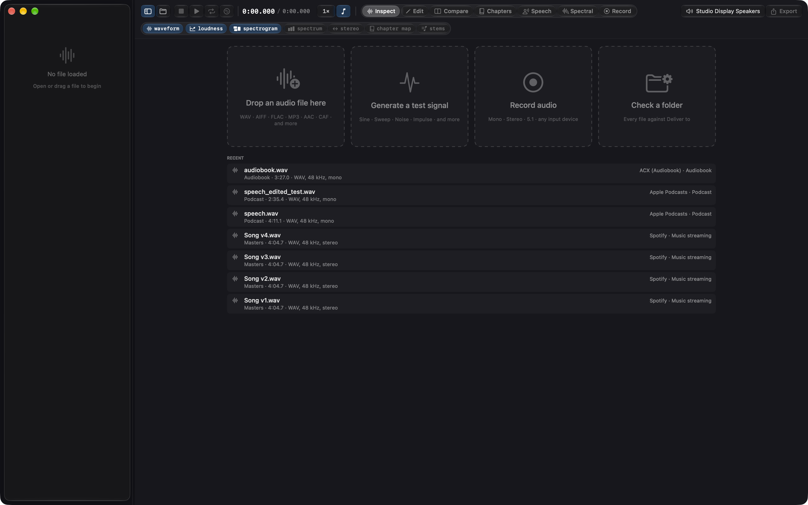
With no file, Tab reaches the tiles and the question's buttons, and Space presses them.
Esc
Esc does one thing per press, in this order:
- Cancels a file that is opening.
- In a text field being edited, puts the value back and leaves the field.
- Ends a drag in progress.
- Clears the time selection. In Spectral it clears the spectral selection and its span together.
- Clears the spectrum panel's frequency band.
- Clears the selected chapter or speech region.
- With nothing left to clear, returns to Inspect.
Esc never ends a recording in progress. In the Signal Generator, Settings and report windows, Esc does not touch the main window.
Pointer and trackpad
Every lane follows the same rules:
| Gesture | Action |
|---|---|
| Click | Place the playhead. A click outside the selection also clears it; a click inside keeps it. |
| Drag | Select a range |
| ⌘-drag | Select a range |
| ⌃-drag | Move the playhead (scrub), also over a selection, a speech region or a chapter boundary |
| Drag a selection's edge or body | Resize or move the selection |
| Click or drag in the ruler | Place or move the playhead |
| Pinch, or scroll up and down | Zoom time around the pointer |
| Swipe sideways, or ⇧-scroll | Pan |
| ⌥-scroll | Zoom the lane's own axis: amplitude in the waveform, the LUFS range in the loudness view, frequency in the spectrogram |
- A move shorter than 3 points counts as a click, and a ⌃-click is a click.
- One notch of a mouse wheel zooms 10%.
- Every lane zooms to the same depth, down to about three samples across a lane.
- In every task a drag in any lane selects, and the selection shows across all the lanes.
- Settings › General › Pointer › Selection gesture offers Drag (the default) or ⌘-drag (classic). Under ⌘-drag (classic) a plain drag moves the playhead and ⌘-drag selects. ⌘-drag selects and ⌃-drag scrubs under both settings.
Gesture legends
Each view's strip ends with a ? button that lists the view's gestures, worded for the current Selection gesture setting.
Selections
A selection is a range of time. It drives analysis (⌘Return), the Edit operations, Loop and the export of a selection's readings.
- IN, OUT and LEN show the selection's start, end and length in the ruler's unit, and take typed values: plain seconds (1.234 or 1.234s), M:SS.fff or H:MM:SS.fff, or with the Samples ruler a sample index. Without a selection, a typed IN makes a one-sample selection there, OUT selects from the start of the file to that point, and LEN selects that length from the start.
- Clear (✕) clears the selection.
- Analyse (⌘Return, Analyze › Analyse Selection) measures the selection. Without one it reads Analyse File, selects the whole file and measures it.
- Edit › Select All (⌘A) selects the whole file when no text field is being edited (not in Spectral, and not while a take records).
- In Spectral the fields show the span of the spectral selection and take no typing. While a take records they take none either.
Typing values
IN, OUT and LEN, the Compare slot card's offset and trim fields, and the loudness view's M, ST and TP fields take the keyboard only when you click them or reach them with Tab. Return commits a typed value; Esc in IN, OUT or LEN puts the value back. Number fields take a point or a comma as the decimal mark. A value that is not a number, such as a frequency typed as 1,000, is refused with the reason. Specula prints numbers with a point for decimals and no thousands separator, whatever the system's region.
HDR accents
On macOS 26 and later, on a display that shows HDR, a few things that come and go light brighter than white: the playback point on the seek bar while playing, the record light while a take records (the record button and the dot beside the Record meters' title), a clip on the Record input bars, a hot peak on the Channels meters, an over on the live meter, the brightest spots of the live phase scope, and the outline of a Spectral selection. They light only while Specula is the app in front, and on a display such as Studio Display only below full brightness. Otherwise they keep their usual colours.
3. Opening files #
⌘O (File › Open…) opens the file picker; you can pick several files. Other ways in:
- Drag and drop one or more audio files onto the window, or onto the Dock icon.
- Open With from the Finder's right-click menu. Specula registers as an audio handler, not as the default one.
- File › Open Recent lists the files you opened recently.
open path/to/file.wavin Terminal.
Opening a file always starts a clean session: any compare set is replaced. Open several files at once and they fill the compare slots in the Finder's file-name order ("Take 2" before "Take 10"): the first becomes slot A and the window switches to Compare. To add files to the current set, use File › Add Files to Compare… (⇧⌘O). Opening a file, from any path, asks first when the session holds unsaved edits, a take that is recording, or a recorded take not yet saved.
While a file opens, the window shows its name and how far the decode has got, with Cancel; Esc cancels too. The file in front stays as it was until the new one has decoded, so a cancelled open leaves it untouched, with its edits, its speech regions and its plugin chain. Nothing plays while a file opens.
Specula keeps the decoded audio in memory. When the file has loaded, it measures the whole file in the background and fills the inspector; see Readings.
Headerless audio (raw PCM)
A decoder under test emits raw samples, a logic analyser dumps an I2S capture, a test harness writes a bare array of floats. Nothing in such a file says how to read it. When a file cannot be read as a known audio format (any extension, through every open path above), Specula asks for its format instead of refusing it. Declare it once and the file works like any other: measure it, compare it, edit it, report on it.
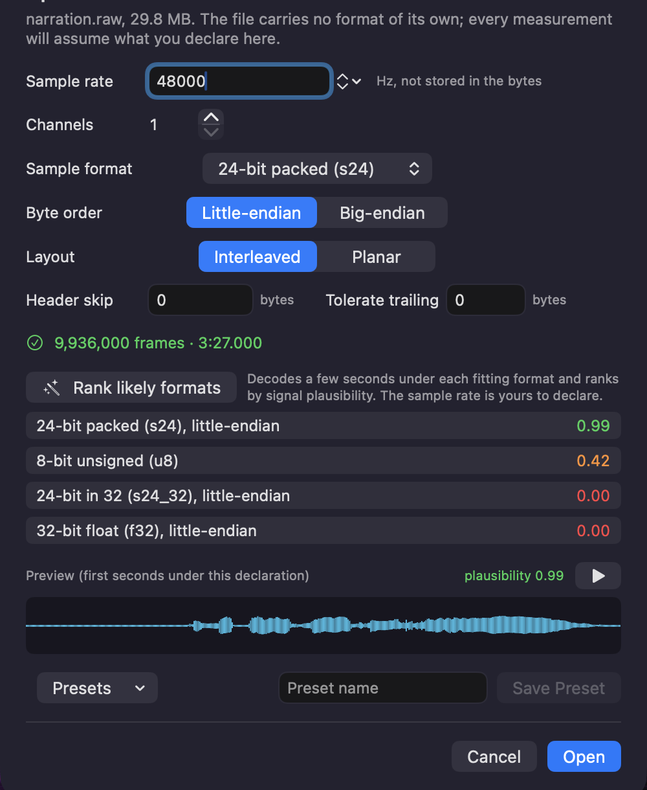
The import sheet declares:
- Sample rate, typed or picked from the common rates. Specula never guesses it: no byte pattern reveals a rate, and a wrong one shifts every measurement (K-weighting, true peak, FFT frequencies).
- Channels and layout: interleaved (the channels alternate sample by sample) or planar (each channel one block). Multichannel files are read in SMPTE order (L R C LFE Ls Rs and on).
- Sample format: 8-bit unsigned, 16-bit and 32-bit integer, packed 24-bit, 24-bit in a 32-bit container, and 32-bit and 64-bit float, each in either byte order. Formats whose size does not divide the file into whole frames are marked. Float samples above ±1.0 come through unclamped, so true peak sees them.
- Header skip ignores a foreign header's bytes before the first sample. Tolerate trailing allows up to that many leftover bytes after the last whole frame (a truncated dump); anything beyond is refused.
Rank likely formats decodes a few seconds under every byte format that fits and scores how much each result behaves like audio; the top candidates apply with a click. Ranking covers the byte formats only; the rate is yours to declare. The preview draws the decoded waveform, shows the same score for the current declaration and plays a few seconds. A wrong declaration is easy to spot: the wrong byte order is full-scale noise, and a wrong channel count combs the waveform.
After a raw file opens:
- The declaration is remembered for that file, so opening it again, or adding it to Compare, does not ask again. File › Reinterpret Raw Format… reopens the sheet with the current declaration.
- Presets save a declaration under a name, for the sheet and for the command line (
--raw-preset). - The inspector shows the declaration under the file's name (click the name), and every report records it.
- Saving writes a normal audio file: the declaration applies to reading only.
Finder Services
Three services appear under Services when you right-click one or more audio files in the Finder:
- Analyze in Specula opens the file in Specula.
- Compare in Specula opens up to six files: the first becomes slot A, the rest B onward.
- Get Report from Specula writes a PDF report without opening a window. It measures the file without speech detection (saved speech regions made for the file still count), judges it against the Music streaming targets, and saves Specula Report - <filename>.pdf next to the source file, numbered if that name exists, or in ~/Downloads when the folder is not writable. Then the Finder shows it. If Specula was not running it stays hidden; if it was, your window is left as it is.
If the entries do not appear after the first install, log out and back in.
4. Deliver to and the delivery card #
Specula judges every file against one delivery lens: a delivery category and its checked targets, one of which is the primary target the verdict leads with.
The chip and the picker
The Deliver to chip names the primary target and the category, such as Deliver to Spotify · Music streaming. It sits in the inspector over the delivery card, and in the top bar while the inspector is hidden. Click it, or choose Analyze › Deliver To… (⇧⌘D), to open the picker:
- The categories on the left: Music streaming, Podcast, Audiobook, Film and TV and Broadcast. Only choosing a category changes the category.
- The category's targets on the right, each with a checkbox and a Primary button. Up to four targets per category can be checked. Making an unchecked target primary checks it; when four are checked, the last one checked gives way.
- Custom targets appear in their category's list, marked Custom.
- Edit targets… opens Settings › Delivery targets.
- A lens suggestion shows at the top when the file fits another category better.

Audiobook is Podcast with ACX leading: under Audiobook, ACX stays checked and primary (Audiobook leads with ACX. Choose Podcast to lead with another target.). Under Podcast, ACX cannot lead (Choose Audiobook to lead with ACX.), and unchecking the primary target passes the lead to another checked target, never to ACX.
The targets
| Category | Target | Measured on | Reference | Tolerance | True-peak ceiling | Checked at first |
|---|---|---|---|---|---|---|
| Music streaming | Spotify | Integrated | -14 LUFS | Platform gain, turns up and down | -1 dBTP | ✓ |
| Music streaming | Apple Music | Integrated | -16 LUFS | Platform gain, turns down only | -1 dBTP | ✓ |
| Music streaming | YouTube | Integrated | -14 LUFS | Platform gain, turns down only | -1 dBTP | ✓ |
| Music streaming | Tidal | Integrated | -14 LUFS | Platform gain, turns down only | -1 dBTP | ✓ |
| Music streaming | Amazon Music | Integrated | -14 LUFS | Platform gain, turns up and down | -2 dBTP | |
| Music streaming | Deezer | Integrated | -15 LUFS | Platform gain, turns up and down | -1 dBTP | |
| Music streaming | SoundCloud | Integrated | -14 LUFS | Platform gain, turns up and down | -1 dBTP | |
| Music streaming | AES TD1008 (streaming) | Integrated | -18 LUFS | Platform gain, turns up and down | -1 dBTP | |
| Podcast, Audiobook | Apple Podcasts | Dialogue | -16 LKFS | Platform gain, turns down only | -1 dBTP | ✓ Podcast |
| Podcast, Audiobook | Spotify (Podcast) | Dialogue | -14 LKFS | Platform gain, turns up and down | -1 dBTP | ✓ Podcast |
| Podcast, Audiobook | ACX (Audiobook) | RMS | between -23 and -18 dB RMS | noise floor less than -60 dB RMS | less than -3 dBTP | ✓ Audiobook, primary |
| Film and TV | Netflix | Dialogue | -27 LKFS | ±2 LU | -2 dBTP | ✓ |
| Film and TV | Prime Video | Dialogue | -27 LKFS | ±2 LU | -2 dBTP | ✓ |
| Film and TV | Apple TV+ | Dialogue | -27 LKFS | ±2 LU | -2 dBTP | ✓ |
| Film and TV | Disney+ | Dialogue | -27 LKFS | ±2 LU | -2 dBTP | |
| Film and TV | Max | Dialogue | -27 LKFS | ±2 LU | -2 dBTP | ✓ |
| Broadcast | EBU R128 (EU) | Integrated | -23 LUFS | ±0.5 LU | -1 dBTP | ✓ |
| Broadcast | EBU R128 (EU, live) | Integrated | -23 LUFS | ±1 LU | -1 dBTP | |
| Broadcast | EBU R128 S1 (EU, short-form) | Integrated | -23 LUFS | ±0.2 LU, max short-term at most -18 LUFS | -1 dBTP | |
| Broadcast | ATSC A/85 (CALM Act) | Dialogue | -24 LKFS | ±2 LU | -2 dBTP | ✓ |
| Broadcast | ARIB TR-B32 (Japan) | Integrated | -24 LUFS | ±1 LU | -1 dBTP | |
| Broadcast | OP-59 (Australia) | Integrated | -24 LUFS | ±1 LU | -1 dBTP |
Two kinds of target:
- Platform gain (the streaming platforms, music and podcast). The verdict is the gain the platform applies: a master at -9 LUFS reads Spotify turns this down by 5.0 dB. Apple Music, YouTube, Tidal and Apple Podcasts only turn loud masters down and play a quieter one as recorded: Apple Podcasts plays this as recorded, 8.7 dB under its -16 LKFS reference. A true peak over a platform's ceiling is a warning, not a fail; the platform does not reject the file.
- Compliance (Film and TV, Broadcast, ACX, and every custom target). The verdict is pass or fail: the loudness inside the tolerance and the true peak at or under the ceiling, plus the target's extra checks (ACX's noise floor, EBU R128 S1's max short-term). A loudness fail is reported first when several checks fail.
What each target measures:
- Integrated loudness: the whole programme, ITU-R BS.1770 with K-weighting and gating. Music streaming, EBU R128, ARIB TR-B32 and OP-59.
- Dialogue loudness (dialogue-gated, in LKFS): the same measurement over the speech blocks only, as the speech detection marks them. The streaming podcast targets, the Film and TV targets and ATSC A/85.
- RMS: plain, un-weighted RMS in dB. ACX.
A file with no detected speech has no dialogue reading, and a dialogue-gated target reads No reading for Netflix: no speech was found.
ACX
ACX asks for a volume between -23 and -18 dB RMS, peaks less than -3 dB and a noise floor less than -60 dB RMS, and Specula judges and words them so, on the delivery card, in the chapter table, in the room check and in the reports. A true peak of exactly -3 dBTP, or a noise floor of exactly -60 dB RMS, fails. Limit peaks for ACX limits to -3.1 dBTP, and Level chapters starts there. Every other target's ceiling is a maximum that the limit itself meets.
The delivery card
Under the chip, the delivery card judges the whole file (in Compare, the slot in front):
- The primary target's name and its reference in one line, such as -14 LUFS · ≤ -1 dBTP or, for ACX, -23 to -18 dB RMS · < -3 dBTP.
- The verdict in a sentence, with a coloured dot: Spotify turns this down by 5.0 dB., Passes EBU R128 (EU)., Fails ACX (Audiobook) on true peak: -2.98 dBTP. ACX requires peaks less than -3 dB.
- The numbers the verdict is read from, in the target's own terms: Integrated (LUFS), Dialogue (LKFS) or RMS (dB RMS), then True peak, and the target's extra checks (Noise floor for ACX, Max short-term for EBU R128 S1). A reading printed beside its limit carries as many decimals as it takes to show which side of the limit it is on: a true peak of -0.96 dBTP under a -1 dBTP ceiling reads -0.96 dBTP is over its -1 dBTP ceiling, not -1.0.
- The fixes for the primary target, as buttons.
- ALSO CHECKED: every other checked target in one line, with a short verdict (-5.0 dB, as recorded, on reference, passes, fails true peak, no reading) and a Fix menu where a fix applies. Hover a line for its full sentence.
- Under Music streaming, the MONO and CODEC CHECK rows (below).
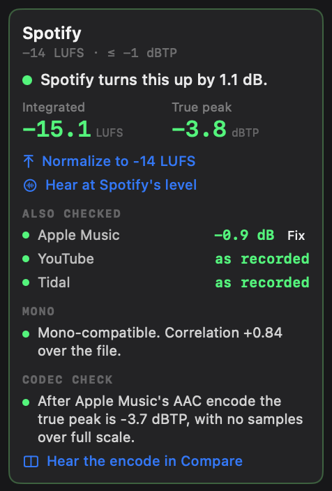
While the file is measured the card says Measuring the file…. After a change it shows the previous numbers dimmed with Measuring the file again. The fixes wait for it. With nothing checked in the category it says No target is checked for <category>. Choose one with Deliver to.
Colours
A reading is coloured by what the primary target does with it:
- Green: within the target's tolerance or ceiling, within 1.5 dB of a platform's reference, or played as recorded.
- Yellow: a platform gain up to 4 dB.
- Orange: a platform gain beyond 4 dB, or a true peak over a streaming platform's ceiling.
- Red: a delivery spec fails.
- No colour: readings no target judges, such as sample peak, loudness range and max momentary.
The inspector, the per-channel statistics window and the PDF and HTML reports use the same colours.
Fixes
A fix appears only where it changes something:
- Limit peaks to -1.0 dBTP (the target's ceiling; -3.1 dBTP for ACX), when the whole file's true peak fails the ceiling. It opens Edit with Limit True Peak filled in, and leaves the loudness alone.
- Normalize to -14 LUFS, or Normalize dialogue to -27 LKFS for a dialogue-gated target, when the target would change the file's level: a platform gain that is not 0.0 dB, or a compliance tolerance missed. Never for a target judged on RMS, such as ACX. It opens Edit with Normalize filled in.
- Hear at Spotify's level plays the file as the platform would: at its gain (none where the platform plays a quiet master as recorded), limited at the target's ceiling. The file itself is unchanged. While on it reads Stop hearing at Spotify's level. Playback › Hear at <target>'s Level does the same for the primary target.
The primary target's fixes are buttons; every other target's are in its Fix menu. A file within a target's tolerance, or a quiet master that a turn-down-only platform plays as recorded, gets no level fix. Every fix works from the whole file's readings. With more than one file in Compare, only Hear is offered.
The Normalize panel opened from a target shows its Basis (Integrated or Dialog-gated), Now (the whole file's reading), Target and Gain, and an editable Ceiling filled in with the target's ceiling as set. Apply lands the reading on the target with a true-peak limiter at the ceiling, as one undoable edit.
Lens suggestions
When the file fits another category better, a banner under the chip says so and offers the switch, such as This file is mostly speech. Switch to Podcast. The rules:
- A surround mix (5.1, 7.1) under Music streaming suggests Film and TV.
- Long-form speech in chapters (mostly speech, 15 minutes or longer, two or more chapters) suggests Audiobook, except under Podcast.
- Mostly speech under Music streaming, with no musical key found, suggests Podcast.
- A song (the music analysis found a key and speech does not dominate) under Podcast, Audiobook or Film and TV suggests Music streaming, or Film and TV for a surround song.
- Broadcast gets no suggestion.
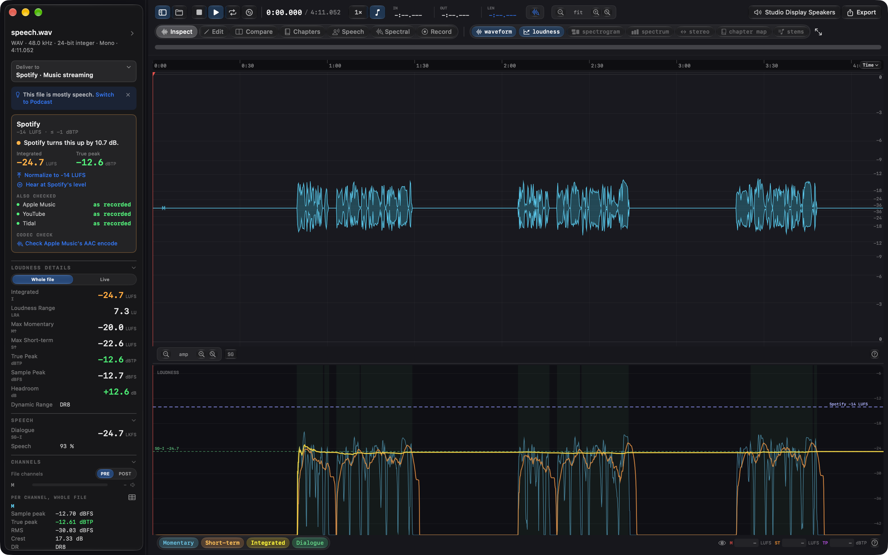
Mostly speech means speech in 60% or more of the file's non-silent blocks. The lens changes only when you press the switch. The banner's close button hides the suggestion for that file until Specula quits; the picker still shows it.
The mono check
Under Music streaming, the delivery card says whether a stereo file folds to mono. It reads left against right as the Stereo width view does, over the whole file and over every second of it (blocks below -70 dBFS do not count). A file passes when its correlation stays above -0.2:
- Mono-compatible. Correlation +0.62 over the file.
- Correlation stays below -0.2 for 3.4 s from 1:02.3. That part thins out in mono., or the count, total and longest stretch when there are several. Select the longest stretch selects it so you can play it.
- Out of phase: correlation -0.45 over the file. Folded to mono, much of it cancels. A whole file below -0.2 reads this way, as a file with one channel's polarity flipped does.
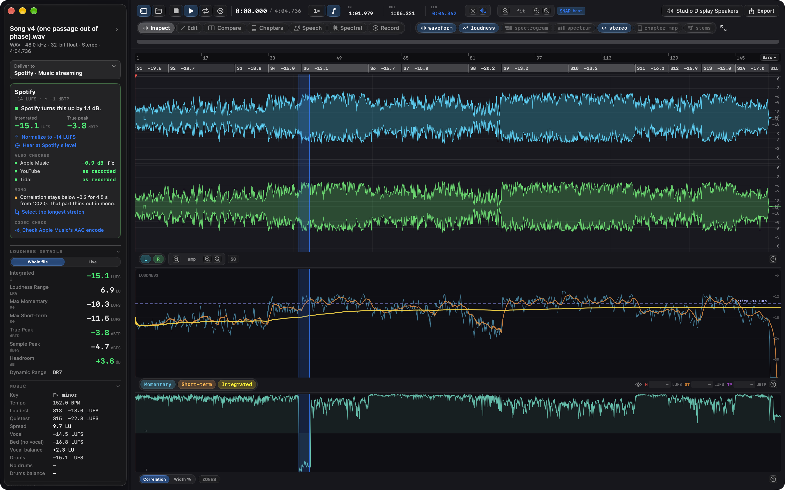
The codec check
The codec check shows what Apple Music's AAC encode does to the master. Under Music streaming the card's CODEC CHECK row offers Check Apple Music's AAC encode; Analyze › Check the Apple Music Encode does the same under any category. Specula encodes the file as AAC with the encode Apple's afconvert makes (256 kbps, constrained VBR, quality 127; 128 kbps for mono), decodes it and measures the encode's true peak and its samples over full scale. Files above 48 kHz are resampled to 44.1 or 48 kHz first. The check takes mono and stereo files at 44.1 kHz and above.
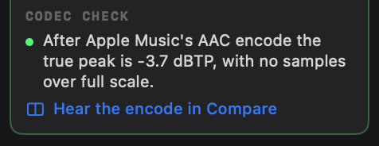
The row then states the result, such as After Apple Music's AAC encode the true peak is +0.4 dBTP, with 12 samples over full scale., coloured against the primary target's true-peak ceiling, and offers:
- Limit peaks to -1.7 dBTP, when the encode goes over the ceiling: it opens Limit True Peak at the target less what the encode added. Check again after the limit.
- Hear the encode in Compare (or Analyze › Compare with the Apple Music Encode): adds the encode as a Compare slot beside the master. Its residual (D in Compare) is what the encoder removed.
After an edit the result reads dimmed with Checked before the last edit. and Check again. The export sheet's Codec check switch puts the check in the reports.
Custom targets
Settings › Delivery targets › Add Custom Target… defines your own delivery spec: a Name, a Mode (the list it joins: Music / Streaming, Podcast / Spoken Word, VOD or Broadcast; a Podcast / Spoken Word target appears under both Podcast and Audiobook), what to Measure (Integrated (full program), Dialog-gated (speech only) or RMS (un-weighted, ACX-style)), a Reference, a Tolerance and a True-peak ceiling. Fields take up to two decimals, and a target's levels print as you set them. A custom target is a compliance target: it passes when the reading sits within the tolerance and the true peak stays at or under the ceiling. It appears in its category's list in the picker and in Settings, and works everywhere a built-in target does: the verdict, the fixes and the reports.
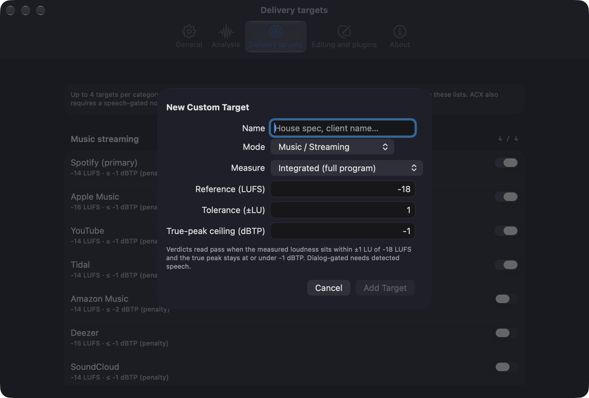
5. Readings #
The whole file at rest
As soon as a file has loaded, Specula measures the whole file in the background and fills the inspector: the delivery card, Loudness details, Speech, Music and Channels. These readings hold still while the file plays. They are measured again after every edit, Undo and Redo, after a speech region is corrected, when a file with saved speech corrections opens, and when the speech detection settings change, so the verdicts, the fixes and the reports always describe the audio and the speech regions in front. While a measurement runs the readings say Measuring the file….
Loudness details
The Loudness details group has a Whole file | Live switch, which starts on Whole file.
Whole file lists:
| Row | Meaning |
|---|---|
| Integrated (I) | Integrated loudness, LUFS |
| Loudness Range (LRA) | LU |
| Max Momentary (M↑) | The loudest 400 ms window, LUFS |
| Max Short-term (S↑) | The loudest 3 s window, LUFS |
| True Peak | dBTP, 4× oversampled |
| Sample Peak | The highest sample, dBFS |
| Headroom | 0 dBTP minus the true peak; negative when the true peak is above 0 dBTP (Music streaming and Broadcast) |
| Dynamic Range | DR (Music streaming and Broadcast) |
Live shows what is playing: momentary and short-term loudness, and the integrated loudness, loudness range and true peak of what has played since playback was stopped, the file was edited or another compare slot was chosen, with short bars. The target verdicts judge the whole file either way. Settings › General › Loudness readout sets how often the live numbers repaint.
What the loudness readings mean
Specula implements ITU-R BS.1770-4 and EBU R128:
- K-weighting: two cascaded biquad filter sections, computed once per sample rate.
- 100 ms gating blocks: each block contributes one mean square value.
- Momentary (M): a 400 ms sliding window.
- Short-term (S): a 3 s sliding window.
- Integrated (I): dual gating, an absolute gate at -70 LUFS and a relative gate 10 LU below the ungated mean.
- Loudness range (LRA): the 95th minus the 10th percentile of the short-term values, gated at -70 LUFS absolute and 20 LU relative.
- True peak: 4× oversampled inter-sample peak, in dBTP.
- Headroom reads from the true peak, never the sample peak, which misses inter-sample overs.
Speech-gated loudness
Specula finds the speech in a file with two detectors:
- Silero neural VAD (the speech detection model, bundled). When a file loads, the whole file is downsampled to 16 kHz mono and classified, giving a speech or non-speech decision per 100 ms block. Analysing a selection classifies the selection again.
- A spectral fallback, used only when Silero is unavailable. It combines four features of each 100 ms block: a high-frequency gate (high-frequency energy above 0.35 of the total means non-speech, which rejects plosives and cymbals), the band energy ratio over 300 to 3400 Hz (threshold 0.45), the spectral flatness (threshold -8 dB), and harmonicity with spectral flux (voiced when the 2nd and 3rd harmonics of the dominant 80 to 400 Hz bin carry at least 20% of the fundamental's energy).
From the speech blocks Specula measures:
- Dialogue (SG-I): the integrated loudness of the speech blocks only, with the same gating, in LKFS. The dialogue-gated targets read it.
- Speech %: the speech blocks over the blocks above the -70 LUFS gate, so pauses of silence do not count. Under 0.5% reads -.
Correct the speech regions by hand in the Speech task. Corrected regions feed every speech-gated reading, the verdicts, the fixes and the reports.
The noise floor
The Noise Floor is the 90th percentile of the 100 ms RMS of the mono mix over the non-speech blocks, in dB RMS. When the pauses are digital zeros it reads digital silence. ACX judges it; it shows for Podcast and Audiobook and for any target that checks the noise floor.
Speech, Music and Channels
- Speech (Dialogue, Speech, and Noise Floor where it applies) appears when the file's Speech % is 10% or more, or when the primary target judges speech (dialogue loudness, or ACX's RMS and noise floor).
- Music appears once the music analysis has found a key: Key, Tempo, the sections' Loudest, Quietest and Spread, and the stem-gated rows. See Songs.
- Channels shows a level bar per channel (a hot peak is an HDR accent) with a mute button: a click mutes or unmutes the channel for playback, ⌥-click hears only that channel, and the last audible channel cannot be muted. Under the bars, PER CHANNEL, WHOLE FILE lists each channel's Sample peak (dBFS), True peak (dBTP), RMS (dBFS), Crest (dB), DR, Clipped (samples) and DC (percent of full scale). A silent channel's sample peak, crest and DR read -, and an RMS at the -120 dBFS floor reads below -120. The table button opens the per-channel statistics window (Window › Channel Statistics), which shows the full file or the selection.
PRE and POST
The PRE | POST switch beside the Channels meters chooses what they show: PRE the file's channels, POST the routed output (see Output and routing). The group names which it shows: File channels or Routed output. The same switch sits in the Output and Routing window.
Analysing a selection
⌘Return (Analyze › Analyse Selection, or the top bar's Analyse button) measures the selection on its own: loudness, true peak, speech detection over the selection, per-channel levels and an averaged spectrum. Without a selection it selects the whole file first.
The results land in a Selection card under the delivery card: its time range (0:12.000 to 0:20.000), Integrated, Dialogue (where speech applies), True Peak, Loudness Range and Max Short-term, and Per channel on request. The ✕ clears the card. The spectrum panel can show the selection's averaged spectrum while that range stays selected. The target verdicts keep judging the whole file.
6. The views #
Showing, hiding and maximizing views
Each task shows its own views and remembers them:
| Task | Opens on | Can also show |
|---|---|---|
| Inspect | Waveform, Loudness, Spectrogram | Spectrum, Stereo, Chapter map, Stems |
| Edit | Waveform, Loudness | Spectrogram, Spectrum, Stereo, Chapter map, Stems |
| Speech | Waveform, Loudness | Spectrogram, Spectrum, Stereo, Chapter map, Stems |
| Compare | Matrix, Waveform | Loudness, Spectrogram, Spectrum, Stereo, Chapter map, Stems |
| Chapters | Chapter map, Chapter table | Waveform, Loudness, Spectrogram, Spectrum, Stereo, Stems |
| Spectral | Spectral canvas | |
| Record | Meters, Last take | Waveform, Loudness |
The view buttons in the top bar show and hide views: the shared views in the order of their keys, then the task's own. A shown view is lit and a hidden one dimmed, and each tooltip names its key. ⌃1 to ⌃7 do the same from the keyboard (View menu):
| Key | View |
|---|---|
| ⌃1 | Waveform |
| ⌃2 | Loudness |
| ⌃3 | Spectrogram |
| ⌃4 | Spectrum and phase |
| ⌃5 | Stereo |
| ⌃6 | Chapter map |
| ⌃7 | Stems (macOS 27) |
Every view can be hidden but the task's last one. Maximize (the icon after the view buttons, or ⌃⌥1 to ⌃⌥7) lets one view fill the canvas; the icon turns into Restore, and the same key again or a task switch restores the task's views. Zoom and scroll stay the same when the task changes, and a new file resets them.
The waveform
All channels of the file, each in its layout's colour. Clipped samples (at or above full scale) show as red bars, and dBFS reference lines adapt to the amplitude zoom. Hovering reads each channel's level at the pointer.
The strip under the waveform holds:
- Channel chips (files with more than one channel): a click mutes or unmutes a channel for playback, ⌥-click hears only that one.
- The amplitude zoom: zoom out, the readout (amp at full scale; double-click it to return there), zoom in, and fit, which sizes the loudest peak of the unmuted channels to the lane. ⌥-scroll zooms smoothly.
- SG, when speech regions exist: draws them over the waveform, tinted by where they came from (teal detected, amber corrected, blue imported). In the Speech task it is always on.
- ?, the gesture legend.
The ruler
The time ruler runs over the first lane. A click or a drag in it places or moves the playhead. The label at its end names the unit it shows, Time, Samples or Bars, and opens a menu of the three with the current one checked; View › Ruler Unit holds the same three. Bars stay in the list, greyed out with the reason, until the music analysis has found a beat grid. IN, OUT, LEN and the waveform's hover readout follow the unit; with Bars they stay in time.
The section band
Once the music analysis has found a song, a band under the ruler shows its sections (S1, S2 and on), each with Specula's integrated loudness for that section and shaded from darker (quieter) to lighter (louder). Click a section to select it; Space then plays it and ⌘Return analyses it. See Songs.
The loudness view
The loudness view plots the momentary, short-term and integrated loudness over time, aligned with the other lanes, for the whole file.
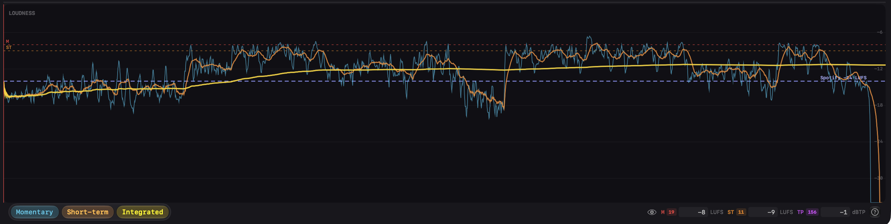
- It opens on a range around the file's loudness and the primary target, and draws the target as a dashed line with its name and level, such as Spotify -14 LUFS. ACX targets get no line.
- ⌥-scroll zooms the LUFS range. The zoom stays until you double-click the view, open another file or choose another target.
- Hover to read M, S and I at the pointer.
The strip under it holds:
- Momentary, Short-term and Integrated, which show or hide each curve, and Dialogue, which shows the speech regions and the dialogue loudness line when the Speech group applies.
- The eye button, which shows or hides the violation highlights.
- M, ST and TP thresholds (LUFS, LUFS and dBTP). Type a limit, and every 100 ms block of the whole file above it is highlighted on the waveform as soon as the file has been measured, with the count beside the field. The fields start empty, which marks nothing. Their tooltips say what each one marks and the primary target's own limit where it has one, such as Spotify's -1 dBTP ceiling. The export sheet's Violations switch puts them in the reports.
- ?, the gesture legend.
In a narrow window the thresholds move to a second row.
The spectrogram
The spectrogram shows the whole file. It is computed when the view is shown, with its progress in the lane (Computing spectrogram…), clears at once when another file opens, and stays as it is while the file plays. Each column sits at the centre of the audio it analyses, so a transient lines up with the waveform and the playhead. On a multichannel file the lane names the channel it shows: one channel when only that channel is on in the spectrum panel's channel toggles, else the mix of all. Hover for time, frequency and level; ⌥-scroll zooms the frequency axis.
The strip under it holds two knobs, Floor (the level drawn black, -120 to -24 dB, default -96) and Ceiling (the level drawn brightest, -18 to 0 dB, default 0), and the gesture legend. Drag a knob up or down to turn it, with ⌥ for fine steps, and double-click it for its default. Spectral's canvas uses the same range.
Its look is set in Settings › Analysis:
- Colormap: Inferno (high contrast, dark background, warm highlights), Turbo (full rainbow), Plasma (purple, magenta, yellow) or Viridis (perceptually uniform, blue, green, yellow). Glow adds a soft bloom around bright transients (0 for none).
- Frequency scale: Log, or Mel, which gives more resolution in the vocal range (200 Hz to 4 kHz).
- Window size (512 to 16384, default 4096): the time against frequency trade-off. At 48 kHz, 512 is about 11 ms and 4096 about 85 ms.
- Overlap: how many columns per second, which sets how much time detail a short file or a zoomed-in view shows, not the resolution. Between columns the spectrogram blends smoothly, as Spectral's canvas does. A long file's spectrogram caps its column count whatever the overlap.
| Overlap | Hop (4096 at 48 kHz) | Columns per second |
|---|---|---|
| 75% (default) | 21.3 ms | about 47 |
| 87.5% | 10.7 ms | about 94 |
| 93.75% | 5.3 ms | about 188 |
| 96.875% | 2.7 ms | about 375 |
| 98.4375% | 1.3 ms | about 750 |
- dB range: Floor, Ceiling and Contrast, which shapes the level-to-colour curve (1.0 is linear; higher darkens the low-level haze).
The spectrum and phase panel
The spectrum runs from 20 Hz to 20 kHz on a log frequency axis. While the file plays it is live. At rest it shows:
- the whole file's average spectrum when a file opens, labelled Whole file;
- the spectrum at the playhead once you place the playhead by hand (the ruler, a click or a ⌃-drag in a lane, the seek bar, the arrow keys, Go to Start), labelled with its time;
- after ⌘Return, the analysed selection's averaged spectrum, while that range stays selected.
The label is a menu for switching between them. Hover for frequency, level and the nearest note with its cents (442.6 Hz · -18.2 dB · A4 +10 ¢ with NOTES on). Scroll zooms the frequency axis; double-click, or the full-range button, returns to the whole range.
The strip holds the channel toggles, the FFT size (2k to 32k), M/S, PEAKS with the number of peaks to label, NOTES, the band filter and the gesture legend.
The band filter. A drag on the spectrum (⌘-drag under the classic Selection gesture) selects a frequency band, and the band filters playback: BAND passes only the band, NOTCH cuts it. Drag the band's edges or body to adjust it while listening; ✕ or Esc removes it.
Window function (Settings › Analysis › FFT window function):
| Window | Side lobes | Use |
|---|---|---|
| Hann | -31 dB | General purpose |
| Hamming | slightly higher | Narrower main lobe than Hann, higher far side lobes |
| Blackman | -58 dB | Strong side-lobe rejection, slightly wider main lobe |
| Blackman-Harris | -92 dB | Best side-lobe rejection, widest main lobe; closely spaced harmonics |
| Flat Top | very wide main lobe | Most accurate amplitude; calibration and level measurement |
The averaged spectrum (the whole file's and a selection's) samples up to 65,536 FFT windows spread across the range, statistically equivalent to averaging every window. Settings › Analysis › Average every window (exact) accumulates every window instead, which can take minutes on hours of audio.
The phase panel plots left against right (L on the x axis, R on the y axis). At rest it shows where the whole file's samples fall, with their correlation; while playing it is a live scope, whose brightest spots are an HDR accent.
- A diagonal from bottom left to top right: mono, in phase.
- A circle or an ellipse: stereo.
- A diagonal from top left to bottom right: out of phase.
- A horizontal or vertical line: one channel is silent.
Stereo width
The correlation between left and right over time (the zero-lag normalized product, as a correlation meter reads it). The strip's Correlation | Width % switch chooses the scale:
- Correlation from -1 to +1: +1 is mono (L = R), 0 uncorrelated, -1 out of phase (L = -R), which cancels when summed to mono.
- Width % from 0 to 100%, computed as (1 - correlation) / 2 × 100: 0% mono, 50% decorrelated, 100% out of phase.
ZONES colours the curve: Mono (0.95 and above), Narrow (0.5 to 0.95), Stereo (0 to 0.5), Wide (-0.5 to 0) and Out of phase (below -0.5). Hover for the time, correlation, width and zone.
Stems
The stems view (⌃7, macOS 27) holds Apple's music analysis of the file: the song's structure, the beat grid, the pace and four stem lanes. See Songs.
The chapter map
The chapters along the timeline, each with its readings: RMS (the ACX loudness check) and integrated loudness with their deviation from the book's median, true peak and noise floor, then LRA, dialogue loudness and Speech %. Click a chapter to select it and make its time range the selection, in every task that shows the map; Space then plays it, and the view stays where it is. Double-click a chapter's name to rename it, and double-click elsewhere in it to move the playhead to its start. See Chapters.
Views at rest
A view with nothing to show says why, such as Mono file: no stereo width, Digital silence: no loudness to draw or Shorter than one FFT window.
7. Inspect #
⌘1, or the Inspect button. Inspect is the home task: the file and its delivery.
- Views: waveform, loudness and spectrogram to start with; any of the shared views on request.
- Task bar: none.
- Inspector: the file, then Deliver to with the delivery card, then the groups. Inspect has no task part.
- Compare slots: when you come back to Inspect with two or more files in Compare, a strip of the slots shows under the top bar. Click a slot to bring it to the front, drag one to reorder, and hover a slot for its remove button.
A typical pass: open the file, read the delivery card, play the passages the loudness view or the thresholds point at, select one and press ⌘Return for its own readings, and export the report.
8. Edit #
⌘2, or the Edit button. Entering Edit pauses playback.
Edit, Chapters, Spectral and Record share one editing session and one edit history: the edited audio, the history and the unsaved state stay with you across them, and one Save at the end writes everything. Changing tasks never discards edits; opening another file or File › Revert to Saved… does. A dot in the task bar marks unsaved edits.
The task bar
| Button | What it does |
|---|---|
| Cut | Removes the selection and joins the audio on either side, with an equal-power crossfade at the join (10 ms to start; 0 for a hard cut; clamped to the audio kept on each side). Not when the selection is the whole file. |
| Trim | Keeps the selection and discards the rest. |
| Fade In, Fade Out | Open the Fade panel for the selection: the direction and the curve (Linear, Log or Equal Power). |
| Gain | Changes the level of the selection, or the whole file without one, by a typed amount in dB (quick values -6, -3, -1, +1, +3, +6). |
| Loudness | Normalize…, Limit True Peak… and Level Dialogue…. |
| More | Silence…, Invert Phase, Remove DC Offset, Swap Left and Right (stereo files) and Split to Mono Files… (two or more channels). |
| Plugins | The plugin drawer. |
| Save, Save As… | See Save and Save As. |
Cut, Trim and the fades need a selection; a disabled button's tooltip says why. Every typed value takes a point or a comma, and anything else is refused with the reason.
The operations in detail:
- Silence… inserts silence at the playhead; with a selection, replaces it or inserts before or after it; without one, inserts at the start or the end. The length is in Seconds or Samples.
- Normalize… (from the Loudness menu) brings the selection, or the whole file, to a Peak target in dBFS (quick values -1.0, -0.5, -0.1, 0.0) or a LUFS target (quick values -16, -14, -11, -9) with a true-peak Ceiling. LUFS normalizing applies a two-pass true-peak limiter (5 ms lookahead, 4× oversampled detection) when the gain raises the level, so inter-sample peaks stay under the ceiling. The panel shows Now, Target and Gain for what it applies to, and says whether it applies to the selection or the whole file. Now is the sample peak in Peak mode and the integrated loudness in LUFS mode; for a selection ⌘Return has not analysed, it asks for ⌘Return.
- Limit True Peak… caps inter-sample peaks at a ceiling and leaves the loudness otherwise unchanged: the same limiter, without the gain stage. It applies to the selection, or the whole file without one.
- Level Dialogue… ducks the room tone between phrases (a downward expander on the non-speech regions, with a fast attack and slow release so word onsets and tails stay clean), and can lift the dialogue to a target in the same pass under a true-peak ceiling. It acts on the speech regions you can correct in Speech. Ducking the room tone before the lift keeps the noise floor from rising with the dialogue, which is what ACX checks. It is a gate, not a denoiser. It is unavailable until speech detection has finished, on a file whose Speech % is under 10%, and, unless the primary target judges speech, on a song or on a file the music analysis has not checked; its tooltip gives the reason. The Speech task holds the same operation with a prediction of the result.
- Invert Phase multiplies the audio by -1. Remove DC Offset subtracts each channel's mean. Swap Left and Right swaps a stereo file's channels. Split to Mono Files… writes one mono WAV file per channel, named with the channel's label, into a folder you choose.
The selection HUD
Over the waveform, a selection shows its length (the LEN field's text) with Cut, Trim, Fade in, Fade out, Gain -1 dB, Gain +1 dB and Analyse. It sits clear of the selection's edges, so a drag on an edge still reaches the waveform. The HUD and menu fades use the equal-power curve, and the HUD and menu Cut a 10 ms crossfade.
The History
The inspector's History lists every edit of the session by name, up to 16 steps back. Click a step to go back or forward to it in one move; every step brings back the audio whole, to its last sample. The step that matches the file on disk says On disk, and going back to it leaves nothing unsaved. Saving starts the history again. ⌘Z and ⇧⌘Z step one at a time. The history is kept on disk, one temporary file per step, so deep history does not multiply memory. When a step cannot be written, Specula asks before applying the edit without Undo.

The plugin drawer
The Plugins button opens a strip of Audio Unit effects that process the audio in Edit, for mono and stereo files. Closed, it shows how many plugins the chain holds and how many play, and while a render runs its progress with Cancel.
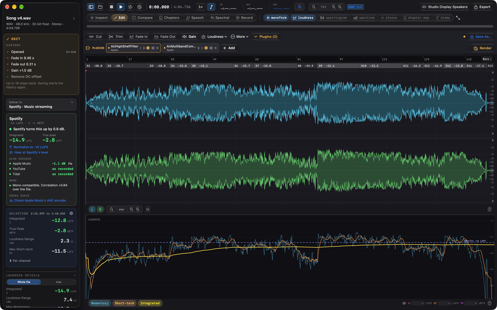
- Add browses the effects installed on your Mac, grouped by maker and searchable; pick one to append it.
- Each chip shows the plugin's name and maker, with buttons to bypass it, move it earlier or later, open its controls (its own window, or a generic parameter panel for a plugin without one) and remove it. A plugin that fails to load shows a red warning with the reason. Click a plugin's name to select it for the Edit menu's plugin commands.
- While playing, tune the plugins live: every meter and view follows the processed sound. Parameter changes and bypass play without a gap; adding, removing or reordering rebuilds the playback graph with a gap under 100 ms.
- Render bakes the chain into the audio through fresh plugin instances, compensating each plugin's latency so the result stays sample-aligned, as one undoable edit. Include effect tail (off to start) appends reverb and delay ring-out; off, the output is exactly as long as the input. Render into Audio consumes the chain; Restore Last brings it back, so Undo, Restore Last, adjust and Render again is the loop. Render to Compare Slot puts the result in a new compare slot beside the original and switches to Compare.
- Leaving Edit with plugins that have not been rendered asks whether to render or discard them. A new file starts an empty chain; Restore Last offers the previous one, also after a restart.
- On a multichannel interface, the output routing chooses which outputs carry the processed signal.
- Settings › Editing and plugins › Prefer out-of-process Audio Units (on to start) keeps AUv3 plugins out of Specula's process, so a crashing plugin cannot take Specula down. AUv2 plugins always run inside Specula.
The Edit menu reaches every drawer action: Show Plugin Chain, Add Plugin…, Restore Last Plugin Chain, Render Plugin Chain…, Cancel Plugin Render, and for the selected plugin Select Next Plugin, Bypass Selected Plugin, Move Selected Plugin Earlier or Later, Show Selected Plugin's Controls and Remove Selected Plugin.
Save and Save As
Save As… (⇧⌘S) writes the audio to a new file and refuses any name that opens the source file, under other capitals or through a hard link. It writes the source's bit depth and sample rate (32-bit float for a source with no fixed PCM bit depth: compressed audio, raw PCM, a generated signal), in the container the file name's extension names. When an integer file would clip samples above full scale, Save As asks first and offers 32-bit float, which keeps every sample. The saved file becomes the working document: chapters, corrected speech regions and the playhead stay, and you stay in the task you were in.
Save (⌘S) writes over the loaded file once Settings › Editing and plugins › Allow Save to overwrite the original file is on (off to start); without it, ⌘S opens Save As. Save keeps the file's own format: bit depth, sample rate and channel layout, and the container read from the file's header, so a WAV named .WAV or .bwf stays a WAV. The audio is written to a temporary file next to the original and swapped in once complete, so a failed save leaves the original untouched. Specula asks before each overwrite; tick Don't ask again, or turn off Ask before overwriting, to stop it asking. Save works for WAV (including Broadcast Wave, RF64, BW64 and Wave64), AIFF and CAF. A compressed file (MP3, AAC, FLAC), a raw PCM file or a recorded take still in the takes folder goes through Save As; Save's tooltip says why. Once written, the original is gone: the history and Revert to Saved reach back only to that save.
Neither save carries metadata chunks over (BWF bext, iXML, cue points, markers). A multichannel file stored in a non-SMPTE channel order is written back in its own order.
Quitting or opening over unsaved work asks first: save (over the file where Save is allowed for it, otherwise as a new file), discard, or cancel. A take still recording, or a recorded take not yet saved out of the takes folder, is asked about too.
9. Compare #
⌘3, or the Compare button. Load up to six files as slots A to F, switch between them while playing, match their loudness and listen to the difference between A and any other slot.
Adding files. File › Add Files to Compare… (⇧⌘O), or the task bar's Add. Adding a second file from Inspect or Record switches to Compare. Several files added together fill the slots in the Finder's file-name order. Each slot is measured when it loads.
Switching. Press 1 to 6, click a slot's chip, or click Listen over its column in the matrix; playback carries on from the same position. A file at another sample rate is resampled to slot A's rate once, when it is added: switching to it is instant, and its residual and Align work. Its readings and reports describe the file itself, at its own rate, and the inspector reads, for example, 44.1 kHz, plays at 48.0 kHz. Left alone after the others are removed, it loads again at its own rate. Switching to a slot with another channel count rebuilds the audio graph, with a short pause.
The matrix
The Compare task opens on the metrics matrix over the waveform. Each slot has a column: its letter and name, a Listen (n) button naming its key, and its readings: Integrated, True peak, Sample peak, LRA, DR, Max momentary, Max short-term, Duration, and Dialogue when a slot holds speech or the primary target judges it. Each value shows its difference from A, worked out from the printed values (= A when both print the same). A Residual (dBFS) row shows the peak and RMS of A minus each slot once a residual exists.

The task bar
- The slot chips: click one to bring it to the front; drag a chip onto another to move it there (onto A's to make it the reference); right-click for Make the Reference (A), Move Left, Move Right and Remove.
- Add.
- Align: finds the offset between A and the slot in front by cross-correlation, first coarse and then to the exact sample, within 5 seconds either way.
- Match: level match. Every slot plays at A's integrated loudness, and the residual subtracts at the same gain.
- Ghost: draws A's waveform behind the slot in front.
- Residual (D): plays A minus the slot in front.
- Export Residual…: writes the residual in front as a WAV file.
The slot card
The inspector's Slot card holds the slot in front:
- Offset in samples, typed or nudged (-1 ms, -1, +1, +1 ms), with the offset in milliseconds and Align.
- Level match with the gain it applies, such as Level match (+1.5 dB).
- Trim in dB, typed or nudged (-1 dB, -0.1, +0.1, +1 dB).
- Invert polarity.
Slot A's card says it is the reference: the other slots align to it and their residuals subtract from it.
The residual
The residual is A minus the slot in front, at the slot's offset, trim, polarity and level match. With level match on, two correct masters of the same source null close to silence; anything above silence is what differs. It is computed again whenever the slot's offset, gain, polarity or level match changes, also when the change comes while it is still being computed.
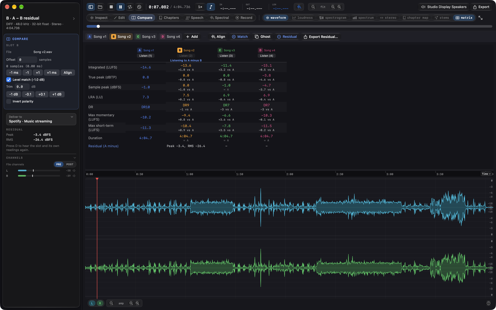
While a residual plays, the inspector shows its own Peak and RMS (over the stretch where both files have audio) in place of the delivery card, with only the Channels group below, and The two files null: their difference is digital silence. when they do. A residual gets no loudness reading or verdict. Press D again to hear the slot. File › Export Residual Audio… (⌃⌘E), the task bar's Export Residual… and the export sheet's Residual audio write the residual in front, and are unavailable when it has none.
A new reference
Moving a file into slot A, or removing slot A, rebases every offset onto the new A, computes the residuals again and names the new reference: <name> is the reference now. Alignments follow it.
Everything else in Compare
- The delivery card, the groups and the reports describe the slot in front, all of it.
- The fixes offer only Hear while Compare holds more than one file.
- Hold play start makes the offset nudges go back to where Play started.
- Hear the encode in Compare (the codec check) adds Apple Music's AAC encode as a slot beside the master; its residual is what the encoder removed.
- The Compare menu holds Slot 1 to 6, Auto-Align to A, Level Match, Show A Behind Other Slots, and for the slot in front Invert Polarity, Make the Reference, Move Left, Move Right and Remove.
10. Chapters #
⌘4, or the Chapters button. Chapters splits a long file, such as an audiobook or a long-form podcast, at its silences and measures every chapter against ACX and against the book's own median.
First entry. Opened on a file without chapters, Chapters detects and measures them, once per load. It offers the chapters saved for this file in an earlier session instead, when there are some. For a song (the music analysis found a key), it offers Chapters from Sections or Detect from Silences.
Views: the chapter map over the chapter table, plus any lane on request.
The task bar
| Button | What it does |
|---|---|
| Detect (⌘D) | Splits the file at its silences. Asks before replacing chapters you named or moved. |
| From Music (macOS 27) | One chapter per song section, from the music analysis. |
| Add (⌘B) | Adds a boundary at the playhead. |
| Remove (⌫) | Removes the selected chapter; its range joins the chapter before it. |
| Analyse (⌘L) | Measures every chapter. |
| Detection | The detection settings. |
| Recall | Restores the chapters saved for this file in an earlier session (shown when there are some). |
| Import…, Export… | Read or write the chapters (boundaries and names) as JSON. |
| Export CSV… | The chapter table as CSV, through the export sheet. |
| Save, Save As… | As in Edit. |
Detection holds Silence below (-90 to -30 dB, -55 to start) and For at least (0.5 to 10 s, 2 s to start), used at the next Detect; Compare by (RMS or Integrated LUFS, RMS to start) and Flag beyond (0.5 to 5, 2.0 to start), which apply at once; and Offer chapters saved in earlier sessions.

How detection works. Each silence below the threshold and longer than the minimum becomes a boundary, and the audio between two silences a chapter. A chapter with under 1 s of non-silent content is dropped. The first chapter starts at 0 and the last ends at the end of the file.
Boundaries. Chapter boundaries are drawn in every lane. Drag a boundary in the waveform to move it. Click a boundary to select the chapter that starts there; Remove then deletes that boundary. After Remove nothing is selected.
The chapter table
One row per chapter: #, Name, Time range and Duration, then three groups of columns:
- ACX: RMS (dB), TP (dBTP), NF (dB). Under Audiobook and Podcast each cell is green when it passes ACX and red when it fails; under the other lenses the cells show their readings without a verdict.
- Consistency: I (LUFS) and vs med (LU), the chapter's integrated loudness against the book's median.
- Details: LRA (LU), Max S, Dialog I and Speech.
Click a row to select the chapter, make its range the time selection and fit it in the lanes. Rename a chapter in the table, or by double-clicking its name in the chapter map. A value just past a limit prints with the decimals that show which side it is on, such as -17.96, not -18.0.
What each chapter measures. Every reading covers all the file's channels at the same BS.1770 channel weights as the whole file's, so a chapter's integrated loudness and true peak are what you would get from that span on its own.
- RMS: plain RMS over the chapter, in dB. ACX's loudness check reads it.
- True peak, 4× oversampled.
- Noise floor: measured as the file's is, over the chapter's non-speech blocks.
- Integrated, LRA, Max short-term, Dialogue loudness and Speech %.
- Chapters shorter than 10 s get RMS and sample peak only: the BS.1770 gating is not reliable below that.
After a change. An edit, Undo, Redo or a speech-region change outdates the readings. The chapters are measured again once the file's own measurement lands; meanwhile the map and the table say These readings are from before the last change. or Measuring the chapters…, show no pass, fail or outlier, Level chapters waits, and Export measures them first.
ACX and Level chapters
The inspector's ACX card counts the table's own marks: All 20 chapters pass ACX. or 3 of 20 chapters fail ACX., then one line per failing check (RMS: 2 chapters). Under Music streaming, Film and TV or Broadcast it reads Not judged against ACX under Music streaming.
Level chapters gives every chapter a uniform gain:
- Book median or Fixed: each chapter to the book's own median, or to a typed Target in the Compare by metric (-20.5 dB RMS to start for RMS, the middle of ACX's window; -18 LUFS for LUFS).
- True-peak ceiling (on to start; -3.1 dBTP for RMS, -1 dBTP for LUFS). The true-peak limiter runs over the whole file after the gains.
- A preview table with every chapter's Now, Gain and After, and why a chapter is left alone (On target, Too short for an integrated reading, Not measured).
- Apply levels every chapter in one undoable edit. Chapters › Level Chapters (⇧⌘L) applies the panel's settings from the keyboard.
A uniform gain moves a chapter's room tone with its level. For a pass that also keeps the floor down, duck the room tone first with Level Dialogue, then level.
Recall, Import and Export
Chapters, with their names, are saved per file in ~/Library/Application Support/Specula/chapters/, matched by the file's name, length, sample rate and channel count; chapters of pure digital silence keep their names too. An automatic detection never replaces a saved set holding your work. Chapter JSON writes a silent chapter's readings as "-inf", as the JSON report does. Export CSV… writes the chapter table with every reading, sample peak and max momentary included.
The Chapters menu holds Analyse Chapter Loudness, Add Boundary at Playhead, Remove Selected Chapter, Level Chapters, Chapters from Music Sections, Chapters from Music Segments (a finer split), Recall Saved Chapters, Chapter Detection…, Import Chapters…, Export Chapters… and Export Chapters CSV….
11. Speech #
⌘5, or the Speech button. Speech corrects the speech regions the detection found. The regions drive the dialogue loudness, Speech %, the noise floor, the verdicts, the fixes, Level Dialogue and the reports.
Views: the waveform and the loudness view to start with. The regions are always drawn on the waveform, tinted by where they came from: teal detected, amber corrected by hand, blue imported.
On the waveform: click a region to select it, drag its body to move it, drag an edge to resize it. ⌃-drag moves the playhead over a region.
The task bar
| Button | Key | What it does |
|---|---|---|
| Add Region / Add at Playhead | A | Makes the selection a region, or adds a 1 s region at the playhead without one. |
| In [ | I | With no region selected, marks the start of a new region at the playhead; with one selected, moves its start to the playhead. |
| Out ] | O | Makes a region from the In to the playhead; with a region selected, moves its end to the playhead. |
| Split | S | Splits the selected region at the playhead. |
| Delete | ⌫ | Deletes the selected region. |
| Reset to Detected | ⌘R | Discards your corrections and detects speech again. |
| Detection | The detection settings. | |
| Export…, Import… | Write the regions to a JSON file, or replace them with the ones in a file. |
The bar also shows a pending In (In at 0:12.340), the number of regions with a dot in their tint, and why saved regions were not applied.

⌘Z and ⇧⌘Z in Speech step the region edits (up to 50 steps), separately from the edit history. Region undo survives leaving Speech and is cleared by opening a file or by an edit that moves the timeline.
Detection
Detection holds the three speech detection settings, which apply to every file:
- Threshold (0.1 to 0.9, default 0.50): Silero's speech confidence. Lower catches quieter speech and more false detections.
- Shortest region (0.05 to 2 s, default 0.10 s): shorter detections are dropped (clicks, breaths).
- Merge gap (0.05 to 2 s, default 0.10 s): regions closer than this join into one.
Over detected regions, a change detects speech again, then measures the file again. Over corrected or imported regions, a change is kept for the next detection: Your corrected regions are kept. Detect Again to replace them with these settings. Detect Again… then asks Replace the corrected speech regions?; Undo in Speech brings them back. Analyze › Detect Speech Again runs the detection again only over detected regions; with corrected or imported regions it is unavailable, and Reset to Detected is the way.
Saved regions
Corrected and imported regions are saved next to the audio file as <audio>.dlg.json and apply when the file opens again, as long as they were made for a file of the same length (within 0.1 s). Regions made for another length are not applied, and the bar says so (Saved speech regions were made for a file 2.3 s longer. They were not applied.). Importing such regions asks first. Save As takes corrected regions to the new file. Saved regions made for another length are never replaced without asking Replace the saved speech regions? (Keep Saved Regions is the default), and Reset to Detected, region undo or a save never removes them. The command line, Shortcuts and the Finder services use saved regions made for the file's length too.
Level dialogue
The inspector's Level dialogue panel:
- Now: the dialogue loudness and the noise floor, with the floor against ACX (Floor -62.3 dB RMS, ACX pass or ACX fail).
- Duck room tone by (18 dB to start), and Lift dialogue to a target with its Target (-16 LKFS to start) and Ceiling (-1 dBTP to start).
- Predicted: the dialogue loudness and noise floor after leveling, and Predicted before peak limiting. when a ceiling applies.
- Apply. After it, the panel shows the file's own readings, measured after the edit.
Speech › Level Dialogue applies the panel's settings. Level Dialogue is an audio edit: it lands in the edit history, which Edit's History shows.
The Speech menu holds Add Region, Mark In at Playhead, Mark Out at Playhead, Split Region at Playhead, Delete Selected Region, Reset to Detected, Level Dialogue, Speech Detection…, Import Speech Regions… and Export Speech Regions….
12. Spectral #
⌘6, or the Spectral button. Spectral turns the canvas into a zoomable, full-resolution spectrogram of the file, where you select regions in time and frequency and process only those: a cough inside a piano chord, a chair squeak under speech, a bite of mains hum. It works on any channel count, and its edits share the edit history and the Save commands with Edit.
The canvas

- A time ruler along the top (click or drag it to place the playhead), a frequency scale on the right of each channel row, and the readout under the pointer: time, frequency and level.
- Wave in the task bar (Spectral › Show Waveform Strip) adds a small waveform strip over the canvas; click or drag it to move the playhead.
- Zoom and scroll as in the lanes: pinch or scroll up and down to zoom time, swipe sideways or ⇧-scroll to pan, ⌥-scroll to zoom frequency. ⌘0 (Reset Zoom) returns both axes to the whole file and the full frequency range, ⇧⌘0 (Fit Time to Window) fits the time alone and ⌥⌘0 (Reset Frequency Zoom) the frequency alone. A button in the canvas's top right corner does the same for each axis while it is zoomed. The canvas keeps the other tasks' zoom and scroll.
- A stereo file shows L, R or Both stacked. A file with more channels shows one channel at a time, picked from the task bar's channel menu, labelled from the file's layout (L, R, C, LFE, Ls, Rs and on).
Selecting
The tools sit in a column on the canvas's left edge, each with its key:
- Rectangle (R): a straight time and frequency range. Its outline shows the cells it takes while you drag, which at the bottom of the frequency axis can be taller than the drag.
- Lasso (L): a free shape.
- Brush (B): paint over a curved trace such as a whistle or a bird chirp. Its size is the task bar's slider (4 to 200 points, 12 to start), or ⇧[ and ⇧]. On the log frequency axis it covers what it visually covers.
- Wand (W): pointing outlines, dashed, what a click would take: the connected region within the tolerance above or below the level under the pointer. A drag sweeps the wand along a blemish. Its options are the tolerance (±1 to 24 dB, 6 to start) and the time reach, how far it spreads each side of the click (50 ms to 30 s, 250 ms to start); changing either re-tunes the last wand selection.
With the rectangle and lasso a drag starts a new selection, Shift adds to it and Option subtracts; a plain click clears it. A brush stroke adds and an Option-stroke paints away. A wand click replaces the selection, Shift adds and Option subtracts. Clear in the task bar, or Esc, clears the selection.
A selection has a white outline (an HDR accent) and keeps its own colours; the rest of the canvas is dimmed while it exists, and the feather's roll-off shows as a soft edge around it. Its time span and frequency range print beside it and in the inspector.
The task bar
The active tool's options, Clear, the analysis size (1024 to 8192, 4096 to start; larger resolves frequency finer, smaller time), Feather, the Floor and Ceiling knobs, the channels shown, Wave, and Save and Save As…. Changing the analysis size with a selection asks first, since the selection belongs to the current size. Feather sets how far each operation rolls off into the audio around the selection, in time and in frequency, and Erase's depth. Spectral › Contrast… opens the Floor and Ceiling as sliders, for the keyboard.
The operation
The inspector's Spectral edit panel:
- The operation: Attenuate, Erase or Repair.
- Attenuate changes the selection's level by Gain (-96 to +24 dB, -18 to start; quick values -48, -30, -18, -6, +6): negative lowers it, positive raises it.
- Erase pulls the selection down to the level of the audio around it, then Depth further (0 to 40 dB, 12 to start). At 0 the hole matches its surroundings; inside busy material the surroundings are the music itself, so more depth removes more.
- Repair rebuilds the selection from the audio on either side of it in time. Best for short blemishes crossing steady material.
- Feather in milliseconds (0 to 200, 20 to start) and hertz (0 to 1000, 50 to start). Every selected cell takes the full effect, and the roll-off lies outside the selection.
- Span and Range: what the selection covers.
- Channels (stereo files): All channels, Left or Right; the panel names the channels Apply edits. Editing one side of a stereo file can skew the stereo image. Above stereo, Apply edits the channel shown, and only that channel; the selection stays when you switch channels, so the same region can be fixed channel by channel.
- Solo (⇧Space) plays only the selection, with everything outside it silenced at the same feathered edges.
- Hear Result (⌥Space) plays the span as Apply would leave it, with the chosen operation.
- Apply writes the operation as one edit. The selection stays, so you can listen and apply again; Undo brings the audio back.
The operations change the level of the frequency bins inside the selection and leave their phase alone. Selections longer than 10 minutes are refused; select a shorter range and work in passes.
Playback in Spectral. With a selection, Space plays its time span. Placing the playhead by hand (the ruler, the waveform strip, the arrow keys, Go to Start) makes Space play from the playhead until the selection changes. One thing plays at a time: starting Solo or Hear Result pauses the file; Space stops an audition and starts nothing; Play and Stop end it too. While an audition plays, the Play button shows pause.
The Spectral menu holds the four tools, Bigger Brush and Smaller Brush, Reset Zoom, Fit Time to Window, Reset Frequency Zoom, Clear Selection, Attenuate, which applies the panel's gain and names it (Attenuate (-18 dB)), Erase to Floor (⌫), Repair, Play Selection Only, Hear the Result, Feather…, Contrast… and Show Waveform Strip. Erase to Floor and Repair also set the panel's operation.
13. Record #
⌘7, the Record button, or the Record audio tile with no file open. Record captures from any input device: a new file, a take appended to the loaded file, an insert at the playhead that pushes the rest later, or a punch that records over existing audio. It is the one task that works with no file open. The first time, macOS asks for microphone permission. Record checks the license when you enter it and again at every take.
The task bar
Take goes to: New file, Append, Insert at playhead or Punch in; all but New file need a loaded file. Splice sets the equal-power crossfade at each join (0 to 100 ms, 10 ms to start; 0 is a hard splice). Save and Save As… as in Edit. The record button is in the top bar's transport, and R starts and stops a take.
The canvas
The Meters view names the input (Input · <device>) and shows, under LIVE INPUT, each channel's level from -60 to 0 dBFS with its peak (a clip lights it as an HDR accent), the momentary loudness and the true peak. While the input is armed it adds the room floor (below). While a take records the title reads Recording · 0:12.3 with the record light, and the Last take view draws the take as it records, growing and scrolling, so a dead input shows within a second. When the input is not live, the view says why, such as No microphone access with the way to turn it on in System Settings › Privacy & Security › Microphone.

Specula records the signal as the device delivers it: no noise suppression, no automatic gain, no EQ. Set the recording level with the input volume in System Settings › Sound › Input.
The inspector
- Input: Device (every device with input channels), Layout (Mono, Stereo or 5.1, always one file; only the layouts the device can feed) and Source (which hardware inputs feed the take, such as Input 3 or Inputs 3 to 4). They are fixed while a take records.
- Room check: while the input is armed, the room's floor over the last five seconds, measured as the file's noise floor will be measured once the take lands (every 100 ms block's RMS of the mono mix, the 90th percentile), against ACX's limit: Quiet enough for ACX or Too loud for ACX. It reads Listening to the room for the first five seconds, and No input signal for digital silence, such as a microphone without permission.
- Takes: the takes of the last seven days, newest first, each with its length, format and how long it is kept, marked Loaded or In Compare, with To Compare, Save As… and Move to Trash. The loaded take and a take in Compare cannot be moved to the Trash. Click a take's name to select it for the Record menu's take commands.
Where a take lands
- New file: the take opens as a new file when you stop, and is measured like any file.
- Append joins the take to the end of the file.
- Insert at playhead puts the take in at the playhead and moves the rest of the file later.
- Punch in records over existing audio: with a selection, the take replaces it and can be longer or shorter; without one, the take records over the audio from the playhead, tape style: the file keeps its length, and grows only when the take runs past the end. A playhead at the very end appends.
Where a take lands is fixed when recording starts. Each landing is one edit: Undo (⌘Z, not while a take records) restores the audio exactly, and Redo brings the take back. After an insert or a punch the landed take becomes the selection, one Space away from listening back. Speech is detected again inside the punched stretch, also after Undo and Redo across a punch, and corrected regions elsewhere stay. Appending, or punching past the end, keeps the chapters and the corrected speech regions.
A take records at the input device's sample rate and is converted to the file's rate when it lands. A mono take goes to every channel of the file, and a stereo take folds to mono for a mono file; other channel mismatches are refused, so a 5.1 file takes a 5.1 take.
Takes on disk
Takes are written as they record to ~/Library/Application Support/Specula/Recordings, as CAF files, so a take is bounded by free disk space, not memory. A take not saved elsewhere is kept for seven days and removed at the next launch after that. Save Selected Take As… (and the Takes card's Save As…) saves the take, as 32-bit float in WAV, AIFF or CAF. To Compare sends a take to a Compare slot: record a part twice and compare the takes level-matched, or listen to their residual.
The Record menu holds Start Recording, the four places a take goes, Splice Crossfade…, Select Next Take, Add Selected Take to Compare, Save Selected Take As… and Move Selected Take to Trash.
14. Songs #
macOS 27 and later. Specula reads a song's structure with Apple's on-device music analysis. Nothing is uploaded: the analysis runs on the Mac in the background, at about 0.6 seconds per minute of audio, plus a few seconds the first time after launch while the model loads.
When it runs
Settings › Analysis › Run music analysis:
- Automatically, except for speech (the default): files up to the length limit (Only files up to, 15 minutes to start), whatever the delivery category, unless speech fills 60% or more of the file.
- Automatically, for every file.
- Only on request.
Analyze › Analyse Music runs it on any file, and reads Cancel Music Analysis while it runs. The Stems view's Analyse button does the same.
What a song opens
A key found means the file is a song. Then:
- the inspector's Music group opens;
- the ruler switches to Bars for that file; the next file returns to the unit you had, and a unit you choose while the song shows stays;
- the Stems view opens in Inspect for that file, unless Settings › Analysis › Open the Stems view when a song is detected is off (it is on to start with);
- under Podcast, Audiobook or Film and TV, Deliver to suggests Music streaming.
When no key is found, nothing opens.
On the timeline
- The section band under the ruler: the song's sections (S1, S2 and on), each with Specula's own integrated loudness over the section, shaded from darker (quieter) to lighter (louder). Click a section to select it; Space plays it and ⌘Return analyses it.
- Bars in the ruler: bar numbers, and beats as ticks when zoomed in. IN, OUT and LEN stay in time.
- The bar and beat under the playhead, in the top bar's timecode.
- SNAP in the top bar: Off, Beat or Bar, Beat to start. With snapping on, selection edges land on the nearest beat or bar; an edge on the start or the end of the file stays there. Spectral's selection does not snap.
The Stems view
The Stems view (⌃7) holds the detail, aligned with the other lanes. Click in it to place the playhead.

- Structure: the sections as labelled bands, with segment and phrase boundaries as ticks. While the section band shows the sections, this row is left out.
- Beat grid: bar lines and beat ticks (zoom in for beats on a long file at whole-file zoom).
- Pace: how busy each part of the song is, in events per minute, drawn as steps. It is independent of the tempo: a sparse breakdown in a fast song reads low.
- Four stem lanes: Vocal, Drums, Bass and Other. Tinted spans mark where a stem is present; the filled curve is its activity from 0 to 1. A trumpet, a synth pad and a string section all land in Other.
The header reads the key, the tempo in BPM, the bar and section counts, and the bar and beat under the playhead.
Speech and other non-musical material. The model still returns a beat grid and a structure for speech, and they mean nothing. It finds no key on such material, so without a key the view hides the beat and pace rows, dims the tempo and says no key detected: tempo and structure unreliable. The stem lanes stay useful: speech lights the Vocal lane.
Song loudness
The Music group lists the Key and Tempo, the Loudest and Quietest sections and their Spread, and the stem-gated loudness: Vocal (integrated over the stretches where the vocal is present), Bed (no vocal) and Vocal balance (the difference in LU; positive means the vocal stretches run louder than the bed), then Drums, No drums and Drums balance. These are Specula's own BS.1770-4 measurements over the file's 100 ms blocks, gated by Apple's presence spans. A side with less than 10 seconds of audio above the absolute gate reads -.
Sections as chapters
The Chapters task's From Music, or Chapters › Chapters from Music Sections, makes one chapter per section; Chapters from Music Segments makes a finer split. Analyse then gives the per-section table.
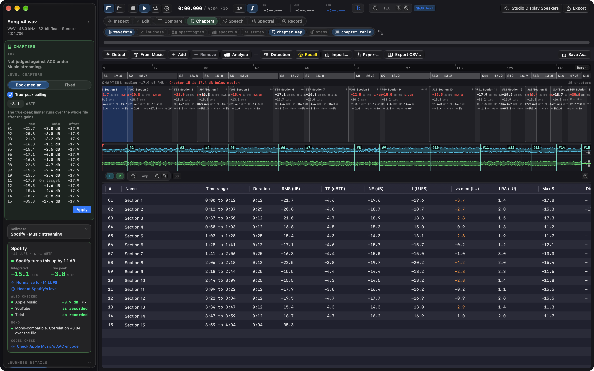
Reports
The JSON report carries the full result under musicAnalysis (stem spans and activity, beats, bars, tempo, sections, segments, phrases, keys, pace) and the stem-gated readings under stemGatedLoudness. The PDF and HTML reports get a Music summary. Apple's analysis is labelled as such. Every loudness figure in Specula is its own BS.1770-4 measurement; the model's loudness is not used.
The results come from a closed model and can differ between macOS releases and between sample rates of the same audio. Read them as a map of the song, not as a measurement. Below macOS 27 the Stems view and Analyse Music are unavailable, and the command-line tool and Shortcuts do not run the analysis.
15. Check a Folder #
File › Check a Folder…, or the Check a folder tile with no file open, opens the Check a Folder window, which checks every audio file in a folder against Deliver to.

- Folder: Choose… the folder; Include subfolders on request. The window counts the audio files, the headerless files without a remembered format (they need one, declared once in the main window) and the other files skipped.
- Judged against: the delivery category and its targets. Change… opens the Deliver to picker, which changes Deliver to in the main window too. The lens and the speech settings are fixed when a check starts.
- Reports: JSON, HTML and PDF for each file (JSON to start), and a CSV of the rows.
- Save to: by default a new folder beside the checked one, named <folder> Specula check <date>. Specula never writes into the checked folder, and never over an existing file: a taken name gets a number.
- Check starts the check; Cancel stops it.
Each file gets a row with its Verdict, Integrated, True peak, LRA and Speech (%), measured with the app's speech detection settings and any saved speech regions made for the file. A file's reports are written as it finishes, and the CSV (<folder> check.csv) at the end or on Cancel. The CSV starts with the folder, the delivery category, the targets and the speech settings when they are not the defaults, then one row per file: File, Verdict, Integrated (LUFS), True Peak (dBTP), LRA (LU), Speech (%), Dialog (LUFS), Speech map and Note.
After a check, a change of lens made with Change… judges the rows again at once, from their readings. A change made elsewhere offers Judge Again. The reports and the CSV keep the targets they were written with. Show in Finder shows the CSV.
16. Export and reports #
The export sheet
File › Export… (⌘E), or Export in the top bar, opens one sheet that writes into one folder in one step:
| Item | Available |
|---|---|
| PDF report | always |
| HTML report | always |
| JSON report | always |
| Chapters CSV | with chapters |
| Edited audio | with unsaved edits (then ticked) |
| Residual audio | with a residual for the compare slot in front |
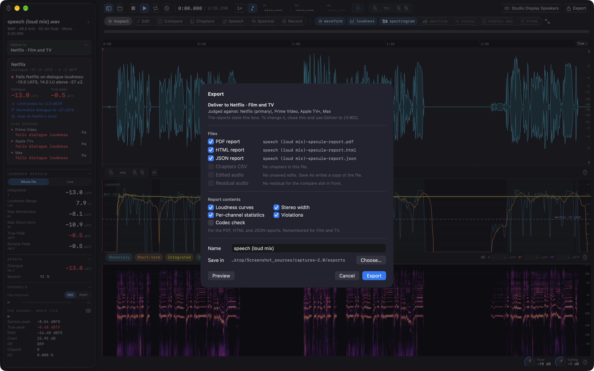
An item that cannot be exported says why. ⇧⌘E (Export JSON Report…) opens the sheet with only the JSON report ticked, and ⌥⌘E (Export PDF Report…) with only the PDF.
- Report contents: Loudness curves, Stereo width, Per-channel stats, Violations and Codec check. The ticked formats (when the sheet opens with ⌘E) and the contents are remembered for each delivery category. At first, every category writes the PDF, Audiobook the chapters CSV as well, and the codec check is on for Music streaming.
- The sheet shows the delivery category and the targets the reports state.
- Names: <name>-specula-report.pdf, .html and .json, <name>-chapters.csv, <name>_edited.wav and <slot> diff.wav. The folder is the last export's, else the source file's, else Documents.
- Existing files: Specula asks, with Keep Both (a numbered copy) as the default, Replace or Cancel. It never writes over the source file, under any spelling.
- Right after an edit, Export waits until the file has been measured, so the reports carry its readings: The file is still being measured. Export writes the files once it is done. Outdated chapter readings are measured first too. With Codec check on and no check of the audio as it is, Export runs the check first.
Window › Report Preview shows the report before you export it; while the file is measured it says Measuring the file….
What the reports hold
The PDF and HTML reports open with the file's facts (the format read from its header, a headerless file's declaration) and Judged against: the delivery category and its targets with the primary first, such as Judged against: Spotify (primary), Apple Music, YouTube, Tidal. Then:
- Metric cards, four to a row, each value with its unit on one line. The Speech-Gated and Noise Floor cards follow the same rule as the inspector's Speech group, and a noise floor of digital zeros reads digital silence.
- The target verdicts, with badges, in the inspector's colours, from the primary target. Every report judges the whole file, ACX's noise floor included. With a selection analysed, the readings are the selection's, and the report says that the targets judge the whole file.
- What speech was measured with: detected (with the detection settings when they are not the defaults), the corrected regions, or none.
- Loudness curves (momentary, short-term and integrated per 100 ms), which break at stretches of digital silence; the grid draws the primary target's reference with its name, such as Apple Music -16 LUFS.
- Stereo width, per-channel statistics (a silent channel's readings read -) and violations, as the contents switches choose.
- Codec Check, with the switch on: the encoder's settings, the master beside the encode (integrated loudness, true peak, sample peak, samples over full scale), what the encode changed, the ceiling it is judged against and the limit that brings it under.
- Music, once Analyse Music has run.
- Chapters, when the file has chapters: the chapter table grouped as ACX, Consistency and Details, each ACX cell green or red with ACX's limit as the HTML tooltip under Audiobook and Podcast, time ranges such as 12:30 to 15:00, long names wrapped to fit the page.
The JSON report has sorted keys, so runs diff cleanly. It carries a delivery block (the category, the primary target and the checked targets), the full-file readings including speechGatedNoiseFloorDBRMS and speechMap, and per-channel statistics. Each entry of loudnessTargets.targets[] has an inline verdict object: status (compliant, penalty, notCompliant or unavailable), actualLUFS, penaltyGainDB, penaltyApplies and truePeakClean for platform targets, and nonComplianceReason, nonComplianceActual and nonComplianceLimit for fails. codecCheck, musicAnalysis and stemGatedLoudness appear when they apply, and a headerless file's declaration under rawFormat. Non-finite values read "-inf"; JSON keeps a silent noise floor as a number.
The chapters CSV is the chapter table with every reading. The command line's specula report --format csv writes a flat table of metric and value, with a Speech map row.
17. Output and routing #
Window › Output and Routing (⌥⌘O), or the output device button in the top bar, opens the Output and Routing window. It is a separate window that remembers its size and position.
- DEVICE: the output device, with each device's channel count, and Refresh Devices. Changing the device rebuilds the audio engine. Any device works, from built-in speakers to multichannel interfaces.
- CHANNEL METERS: the PRE | POST switch, which chooses whether the inspector's Channels meters show the file's channels or the routed output.
- ROUTING: a matrix that maps each source channel to one or more output channels with a gain per route.
Routing changes playback only; the file is untouched. A 5.1 master with the wrong channel order is a routing problem, not an EQ problem: reroute channels for playback to check L, R, C, LFE, Ls and Rs against your monitors.
Presets
The preset bar applies a complete mapping in one click. Presets show only where they fit the file's and the device's channel counts:
- Default: one to one, source channel N to output N.
- L/R, Mono L, L+R → Both and Swap L/R (stereo files).
- 5.1 → Lo/Ro and 5.1 → Mono (six-channel files).
- 7.1 → Lo/Ro and 7.1 → 5.1 (eight-channel files).
- Ls/Rs solo and C/LFE solo (six-channel files), to hear surround content on its own.
A preset replaces every route, custom gains included, and mutes the outputs it does not address. Lo/Ro follows the ITU-R BS.775 stereo downmix: the front channel, plus Center at -3 dB, plus the same-side surround at -3 dB (1/sqrt(2), the equal-power gain for summing correlated channels).
Saved presets sit above the built-in ones. Save stores the current routing (sources, gains and phase) under a name; a saved preset shows when the file and device have the same channel counts. Import reads a routing presets JSON file and adds the presets not in your library yet; Export writes all your presets to a file. Right-click a saved preset to rename it, export it alone or delete it. Saved presets persist across launches.
List and Matrix
The List | Matrix switch shows the same routing two ways:
- List: one row per output channel, with a source picker and a typed gain in dB per route.
- Matrix (the default): rows are device outputs, columns are source channels; a routed cell is filled, an unrouted one dim. A routed cell has three zones: the dot turns the route off, the ϕ glyph cycles the route's phase through 0°, +90°, -90° and 180° (orange while not 0°), and the value is the gain in dB: type it (Return commits, Esc cancels) or drag up and down (0.25 dB per pixel). Click an unrouted cell to route it at 0 dB. Right-click a cell for the same actions.
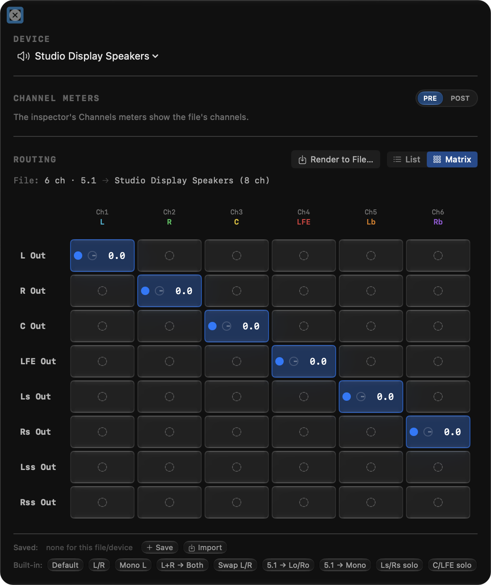
The ±90° states are a broadband Hilbert shift, not a polarity flip, so a quadrature relationship survives a fold-down built by hand. Save such a matrix as a preset to recall it.
With the keyboard, Tab reaches every control; a gain takes Return or Space to type a value and the arrow keys to step it by 1 dB. With VoiceOver, each cell is a button named for its route, such as L to R Out, with its state.
Render to File
Render to File… in the Routing header renders the routing to a new audio file: every route's gain, phase and ±90° shift, computed offline. Only the routed outputs are written, so a 5.1 to stereo downmix on an eight-channel device renders a two-channel file. The file is a WAV, or a CAF when the channel count needs a layout WAV cannot store, and never replaces the source. It bakes the routing only: the Hear level and the channel mutes are not baked. To drop a channel from the render, unroute it in the matrix.
18. Signal generator #
Window › Signal Generator (⌘G), or the Generate a test signal tile with no file open, opens the Signal Generator. It builds test signals from scratch and writes them to a file, so it needs nothing loaded. It keeps your signal across closing the window and relaunching.
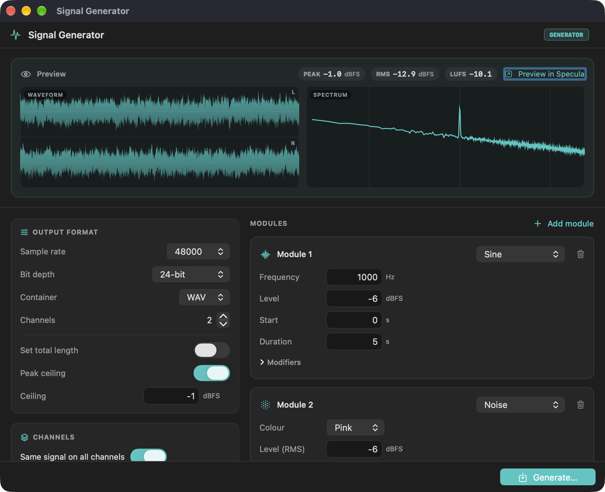
Sources
A signal is made of modules. A module is one sound with a level, a start time and a length:
- Sine, square, sawtooth, triangle at a frequency you set. The square, sawtooth and triangle are band-limited, built from their exact harmonic series up to the top of the band, so they stay free of aliasing at any frequency.
- Noise: white (flat), pink (-3 dB per octave) or brown (-6 dB per octave).
- Impulse: one full-scale sample, the rest silence. With bursts it becomes an impulse train.
- Sweep: a sine from one frequency to another, linear (constant Hz per second) or logarithmic (constant octaves per second).
- Silence.
A module's level is peak dBFS for the tones, sweeps and the impulse, and RMS dBFS for noise.
Stacking and sequencing
Modules that overlap in time sum: three sines at once make a chord, a tone plus noise a tone in noise. Modules placed one after another form a sequence: a second of silence, an impulse, a 1 kHz tone, a sweep.
Modifiers
Each module can add click-free fade in and fade out edges, a Level sweep (from one level to another, linear or in dB) and Bursts (the module on and off: set the on and off lengths and the count; for an impulse, on plus off set the spacing).
Channels and format
Same signal on all channels builds one signal for every channel, with noise decorrelated per channel, so stereo noise is real stereo. Turn it off to give each channel its own modules.
Set the sample rate, the bit depth (16-bit or 24-bit integer, or 32-bit float) and the container (WAV, AIFF or CAF; AIFF stores integers only). Set total length fixes the file's length, padding or trimming the modules; without it the file ends where the last module does. Peak ceiling scales the whole render so its loudest sample sits at the level you set.
Preview and Generate
A live waveform and spectrum of the signal sit at the top of the window and follow your edits, with peak, RMS and integrated-loudness readouts; long signals preview their first 30 seconds. Preview in Specula renders the signal to a temporary file and opens it in the main window.
Generate… (⌘Return), at the bottom right, asks where to save, writes the file and reports its peak, RMS and integrated loudness. Reveal shows it in the Finder; Open in Specula opens it in the main window. The same generator runs on the command line as specula generate.
19. Command line and Shortcuts #
For batch QC, scripts and Shortcuts, Specula ships a command-line tool and App Intents on the same measurement engine as the app: the same numbers, without a window.
Install
The tool ships inside the app. Choose Specula › Install Command-Line Tool… (or Settings › General › Install Command-Line Tool…) and Specula links specula into /usr/local/bin, with one admin prompt if that folder needs it. The link points into Specula.app, so app updates keep the command current. By hand:
sudo ln -sfh "/Applications/Specula.app/Contents/Helpers/specula" /usr/local/bin/specula
Check it with specula --version.
Licensing
The tool shares the app's license and trial. During the trial it prints the days left on stderr; after it, it needs the license activated in the app (Specula › Manage License…), and an unlicensed install exits with code 77 and an explanation on stderr. --help and --version always work. The first licensed run asks once for access to the license in the Keychain: click Always Allow. Do that once in a local Terminal window before using the tool over SSH, where the prompt cannot appear.
specula analyze <FILE>
The headline numbers as JSON: integrated loudness, true peak, sample peak, loudness range, speech-gated loudness, stereo correlation, and speech.map (detected, corrected or none).
specula analyze mix-v2.wav
specula analyze mix-v2.wav --no-vad # skip speech detection
specula analyze mix-v2.wav --no-stereo # skip the correlation pass
specula analyze mix-v2.wav --no-sidecar # ignore saved speech regions
Raw PCM input (--raw-*)
analyze, report and edit take headerless raw PCM when you declare the format (see Headerless audio):
specula analyze dump.pcm --raw-rate 48000 --raw-channels 2 --raw-format s24le
specula report capture.bin --raw-rate 96000 --raw-channels 1 --raw-format f32le --format pdf --out capture.pdf
specula edit take.raw --raw-rate 48000 --raw-channels 2 --raw-format s16le --gain=-3 --out take-quiet.wav
specula analyze dump.pcm --raw-preset "Apollo capture"
--raw-rate,--raw-channelsand--raw-formatare all required for a raw input. There is no default rate.--raw-formattokens:u8,s16le,s16be,s24le,s24be(packed 3 bytes),s24_32le,s24_32be(24 bits low-aligned in 4 bytes),s32le,s32be,f32le,f32be,f64le,f64be.--raw-skip Nignores N header bytes.--raw-tolerance Nallows N trailing bytes after the last whole frame.--raw-planarreads one block per channel.--raw-preset NAMEuses a preset saved in the app's import sheet; other--raw-*flags refine it.- A size that does not divide into whole frames is an error.
- The JSON report records the declaration under
rawFormat.
specula compare <A> <B>
Two files side by side, with B minus A differences for every metric, and speech.map for each.
specula compare master-v1.wav master-v2.wav
specula compare master-v1.wav master-v2.wav --match-loudness
specula compare master-v1.wav master-v2.wav --no-vad
--match-loudnesssubtracts the integrated-loudness difference from B's peak and speech-gated readings, so the differences show changes of shape or tone, not of level.--no-sidecarignores saved speech regions.--out-diff <PATH>also writes the residual, A minus gainB·B, as a 32-bit float WAV file, whatever the name's extension. Pair it with--match-loudnessto remove a pure level difference first. A file B at another sample rate is resampled to A's rate; the channel counts must match. The JSON gains aresidualblock with the residual's peak, RMS and the gain applied; for two identical files both readings are left out.
specula edit <FILE> --out <OUT> …
Applies edit operations and writes the result to --out (-o). The extension picks the container, in any letter case: .wav (also .bwf, .rf64, .bw64, .w64), .aiff, .aifc or .caf; any other is refused. --out writes 32-bit float and refuses any path that opens the input, the rule Save As follows. To write over the source deliberately, pass --in-place instead of --out: it works for WAV (including Broadcast Wave and RF64), AIFF and CAF, keeps the file's own container, bit depth and channel layout, and writes atomically, so a failure leaves the source untouched. Raw PCM inputs cannot be rewritten in place.
specula edit mix.wav --out mix-norm.wav --normalize-lufs=-14 --lufs-ceiling=-1
specula edit mix.wav --out mix-trimmed.wav --trim 5.0:30.5
specula edit mix.wav --out mix-louder.wav --gain 3
specula edit mix.wav --in-place --dc-remove
Negative values need the --option=value form (--gain=-3, --normalize-lufs=-14); otherwise the leading - reads as an option name.
The operations, applied in this order when several are passed:
--trim START:END: keep only that range, in seconds.--dc-remove: subtract each channel's mean.--invert-phase: flip the polarity of every channel.--gain DB: a uniform gain.--normalize-peak DBFS, or--normalize-lufs LUFSwith--lufs-ceiling DBTP(default -1); not both.--limit-tp DBTP: the true-peak limiter at this ceiling, without a loudness change; it runs last, to catch peaks an earlier normalize left.
LUFS normalizing and --limit-tp use the same 5 ms two-pass true-peak limiter with 4× oversampled detection.
specula generate --out <OUT> …
Synthesizes a test signal: one source per run, across N identical channels.
specula generate --sine 1000 --duration 5 --channels 2 --out tone.wav
specula generate --noise pink --level=-20 --duration 10 --out pink.wav
specula generate --sweep 20:20000 --sweep-shape log --duration 3 --bit-depth 24 --out sweep.wav
Pick one source: --sine HZ, --square HZ, --saw HZ, --triangle HZ, --noise white|pink|brown, --sweep START:END, --impulse or --silence. --level is peak dBFS for tones and RMS dBFS for noise (default -6 and -20). Format: --sample-rate (default 48000), --bit-depth 16|24|32f (default 24), --container wav|aiff|caf (else from the --out extension) and --peak-ceiling.
For layered or sequenced multichannel signals, describe the signal in JSON and pass it with --spec-file. The JSON follows the window's builder (channels holding timed modules); omitted fields take the builder's defaults:
{"channels": [{"name": "L", "modules": [{"source": {"sine": {"frequency": 1000}}, "duration": 5}]}]}
Module fields: source (required: sine, square, sawtooth or triangle with frequency, noise with a colour, sweep with start, end and shape, impulse, silence), start, duration, gainDB, fadeInSeconds, fadeOutSeconds, levelSweep, burst. Spec fields: sampleRate, bitDepth (int16, int24, float32), container, channels, duration, peakCeilingDB. The receipt on stdout gives the format written and the measured peak, RMS and integrated loudness.
specula report <FILE>
A full Specula report through the same pipeline, in your choice of format.
specula report mix.wav --mode music # JSON to stdout
specula report mix.wav --mode podcast --out report.json # JSON to a file
specula report mix.wav --mode music --format html --out report.html
specula report mix.wav --mode music --format pdf --out report.pdf
specula report mix.wav --mode broadcast --no-curve
--mode music|podcast|vod|broadcastchooses the targets that judge the file.--format json|html|pdf|csv: JSON is the default. PDF needs--out, and prints a receipt with the input, the output, the bytes written and the mode. CSV is a flat metric and value table.--no-vadskips speech detection,--no-stereothe correlation pass,--no-curvethe loudness curve.--vad-threshold(0.1 to 0.9, default 0.5),--vad-min-speech(0.05 to 2 s, default 0.1) and--vad-min-silence(0.05 to 2 s, default 0.1) set the speech detection as the app's Detection settings do.--no-sidecarignores saved speech regions.
analyze, compare and report use the speech regions saved beside a file (its .dlg.json) when they were made for the file's length (within 0.1 s), as the app does, unless --no-sidecar.
Output format
Every subcommand prints pretty-printed JSON with sorted keys, so runs diff cleanly. Non-finite values (silence reads minus infinity) print as "-inf".
Shortcuts (App Intents)
Specula offers eight actions to the Shortcuts app and Siri, in two variants each, one taking a file and one taking a path as text:
| Action | File input | Path input | Returns |
|---|---|---|---|
| Measurements | Get Measurements | Get Measurements (from Path) | Specula Measurements (I, M, S, LRA, TP, SP, DR, Speech-Gated, Speech %) |
| Numeric compare | Compare Files | Compare Files (from Paths) | Specula Comparison (both sides, B minus A differences) |
| Audio compare | Get Compare Diff | Get Compare Diff (from Paths) | the residual WAV (A minus gainB·B) |
| Report | Get Report | Get Report (from Path) | the report file (JSON, HTML or PDF) |
- Get Measurements exposes every number as a variable a later step can test ("if Integrated LUFS is greater than -12"). Skip Stereo Correlation (off) saves the correlation pass on long files.
- Compare Files has Match Loudness, as
--match-loudnessdoes. - Get Compare Diff returns the residual audio. With Match Loudness on, B is scaled to A's integrated loudness first. B at another sample rate is resampled to A's rate; the channel counts must match.
- Get Report has Format (JSON, HTML or PDF) and a Loudness Mode picker (Music, Podcast, VOD, Broadcast), as the command line's
--mode.
Speech detection is off by default in the measurement, compare and report actions; turn on Enable Speech Detection in the step when you need speech-gated readings. The two Get Compare Diff actions have no speech detection. The measurement, report and compare actions use saved speech regions made for the file's length.
Binding the file input. A file parameter shows Choose and a small … menu. Choose picks one file. The … menu holds the variable picker: choose Shortcut Input to take the file from a Quick Action, the Share Sheet or the previous step. Do not choose Clear, which removes the binding.
The (from Path) variants take the file's path as text, from the clipboard, Ask for Text or a shell. They accept bare paths (/Users/me/foo.wav), paths with spaces (/Users/me/My Mix.wav), tilde paths (~/Music/foo.wav), single-quoted, double-quoted and curly-quoted paths, and file:// URLs (file:///Users/me/My%20Mix.wav). Quotes are stripped and a tilde expands to your home folder, so Get Clipboard followed by Get Report (from Path) makes a report of the path on the clipboard.
Spotlight phrases: "Measure with Specula", "Measure path in Specula", "Compare files in Specula", "Compare paths in Specula", "Get diff with Specula", "Get diff from paths with Specula", "Build a report with Specula" and "Build a report from path with Specula". The file actions also answer to "Get measurements from Specula", "Compare audio in Specula" and "Get Specula report".
Every action checks the license, as the command-line tool does.
20. Settings #
Specula › Settings… (⌘,) has five tabs. Settings holds what applies to every file; speech detection is set in the Speech task, chapter detection in the Chapters task, and the report contents in the export sheet. Each tab scrolls.
General
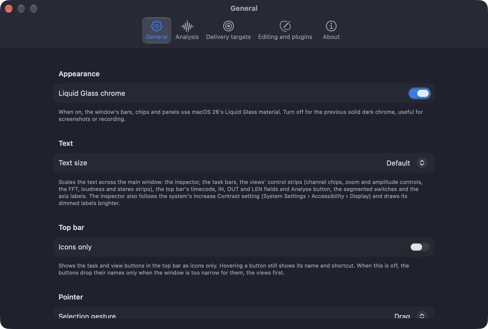
- Appearance (macOS 26 and later): Liquid Glass chrome, on to start. Off gives solid dark chrome, which suits screenshots and screen recordings.
- Text: Text size, Default, Large or Extra Large. It scales the inspector, the task bars, the views' strips, the top bar's timecode, IN, OUT and LEN fields and Analyse button, the segmented switches and the axis labels. The inspector also follows Increase Contrast (System Settings › Accessibility › Display) and draws its dimmed labels brighter.
- Top bar: Icons only shows the task and view buttons as icons; hovering a button still shows its name and key. Off, the buttons drop their names only when the window is too narrow for them, the views first.
- Pointer: Selection gesture, Drag or ⌘-drag (classic). See Pointer and trackpad.
- Loudness readout: Refresh rate, how often the live Momentary, Short-term and Integrated numbers repaint while playing: 10 Hz (EBU Tech 3341) (the default), 5 Hz or 2 Hz. EBU Tech 3341 asks for at least 10 Hz for short-term and 1 Hz for integrated, so every rate keeps integrated compliant; the slower ones are easier to read. It changes the display only: every 100 ms block is still measured. Rolling digits animates value changes over 150 ms; at 10 Hz the roll cannot finish between refreshes.
- Updates: the current version, Check for Updates Now and Automatically check for updates (at most once a day).
- License: the license or trial status. In the trial, the buy button and Manage License…; licensed, the masked key and Deactivate License, which frees the activation for another Mac.
- Command-line tool: Install Command-Line Tool….
Analysis
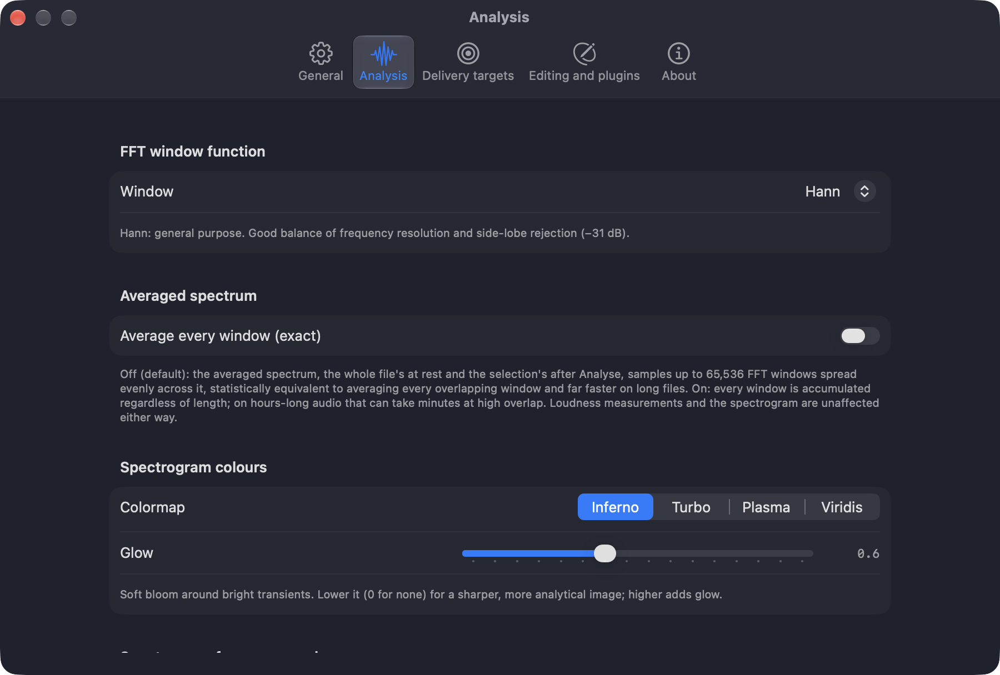
- FFT window function: Hann, Hamming, Blackman, Blackman-Harris or Flat Top, with a line on the one chosen.
- Averaged spectrum: Average every window (exact).
- Spectrogram colours (Colormap, Glow), frequency scale (Log, Mel), window size, column density (overlap) and dB range (Floor, Ceiling, Contrast). See The spectrogram.
- Music analysis (macOS 27): Run music analysis, Only files up to (minutes, with Automatically, except for speech) and Open the Stems view when a song is detected. See Songs.
Delivery targets
One list per category: Music streaming, Podcast and Audiobook, Film and TV and Broadcast, each target with its reference and how a platform plays a master (penalty, turns down only or penalty), the primary target marked, and the number checked out of four. The lists keep the Deliver to picker's rules: under Audiobook ACX stays checked, and under Podcast unchecking the primary target passes the lead to another target, never to ACX. The category and the primary target are chosen with Deliver to.
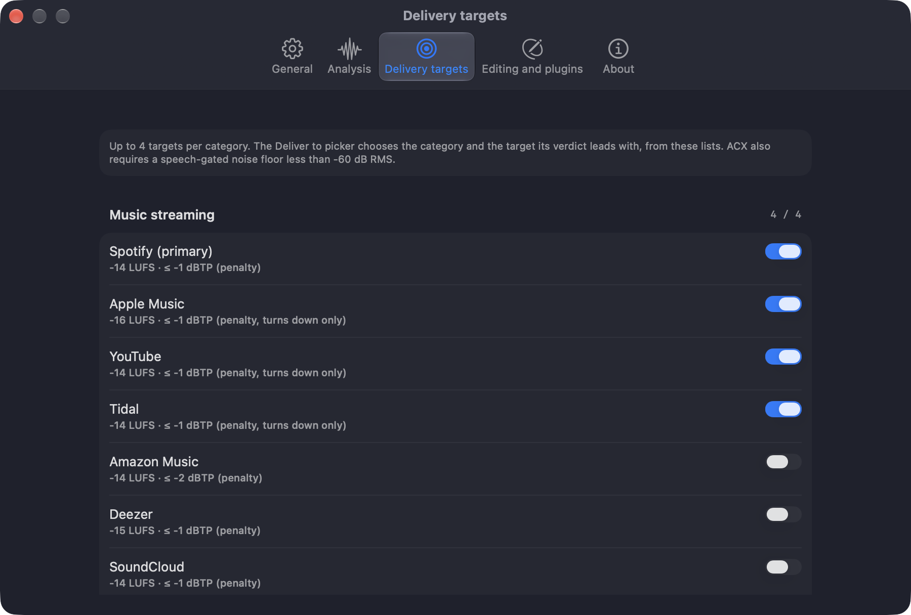
Custom targets lists yours with Edit and a delete button, and Add Custom Target…. See Custom targets.
Editing and plugins
- Saving: Allow Save to overwrite the original file (off) and Ask before overwriting (on). See Save and Save As.
- Audio Unit hosting: Prefer out-of-process Audio Units (on). See The plugin drawer.
About
The open-source components Specula is built with, and their full license texts.
21. Keyboard reference #
Help › Keyboard Shortcuts lists every key. The menus declare every key except Space, 1 to 6, D and Esc, which act in the main window only. A key marked with a task works only in that task.
In the main window
| Key | Action | Where |
|---|---|---|
| Space | Play or pause (with a file; without one Space presses the focused control) | Main window |
| 1 to 6 | Bring a compare slot to the front | Compare |
| D | Listen to the residual, or the slot again | Compare |
The menu items name these keys in their titles: Play (Space), Slot 2 (2), Listen to the Residual (D).
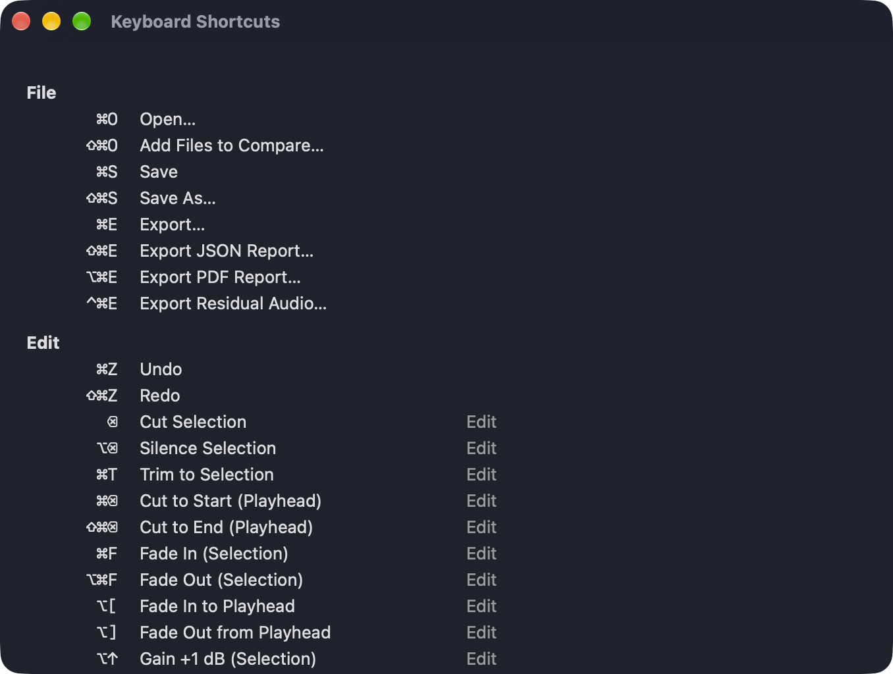
File menu
| Key | Command |
|---|---|
| ⌘O | Open… |
| ⇧⌘O | Add Files to Compare… |
| ⌘S | Save (over the file with Settings › Editing and plugins' option, else Save As) |
| ⇧⌘S | Save As… |
| ⌘E | Export… |
| ⇧⌘E | Export JSON Report… |
| ⌥⌘E | Export PDF Report… |
| ⌃⌘E | Export Residual Audio… |
Also: Open Recent, Check a Folder…, Revert to Saved… and Reinterpret Raw Format….
Edit menu
| Key | Command | Task |
|---|---|---|
| ⌘Z | Undo (the edit history; the region history in Speech) | |
| ⇧⌘Z | Redo | |
| ⌘A | Select All (the whole file, when no text field is being edited) | |
| Esc | Deselect | |
| ⌫ | Cut Selection | Edit |
| ⌥⌫ | Silence Selection | Edit |
| ⌘T | Trim to Selection | Edit |
| ⌘⌫ | Cut to Start (Playhead) | Edit |
| ⇧⌘⌫ | Cut to End (Playhead) | Edit |
| ⌘F | Fade In (Selection) | Edit |
| ⌥⌘F | Fade Out (Selection) | Edit |
| ⌥[ | Fade In to Playhead | Edit |
| ⌥] | Fade Out from Playhead | Edit |
| ⌥↑ | Gain +1 dB (Selection) | Edit |
| ⌥↓ | Gain -1 dB (Selection) | Edit |
In Edit the menu also holds Normalize…, Limit True Peak…, Level Dialogue…, Insert Silence…, Invert Phase, Remove DC Offset, Swap Left and Right, Split to Mono Files… and the plugin commands. While IN, OUT or LEN is being typed in, ⌥↑ and ⌥↓ move the caret.
View menu
| Key | Command |
|---|---|
| ⌘1 to ⌘7 | Inspect, Edit, Compare, Chapters, Speech, Spectral, Record |
| ⌃1 to ⌃7 | Show or hide Waveform, Loudness, Spectrogram, Spectrum and phase, Stereo, Chapter map, Stems |
| ⌃⌥1 to ⌃⌥7 | Maximize that view, or restore |
| ⌘I | Show Inspector |
| ⌘= | Zoom In |
| ⌘- | Zoom Out |
| ⌘0 | Zoom to Fit (Reset Zoom in Spectral) |
Also: Ruler Unit (Time, Samples, Bars).
Playback menu
| Key | Command |
|---|---|
| Space | Play / Pause |
| ⌘. | Stop (and return to the start) |
| [ | Slower |
| ] | Faster |
| \ | Normal Speed |
| ← / → | Back / Forward 5 Seconds |
| ⇧← / ⇧→ | Back / Forward 1 Second |
| ⌘← | Go to Start |
| L | Loop (not in Spectral, where L is the Lasso) |
Also: Hold Play Start, Hear at the target's level, and in Compare Listen to the Residual (D).
Analyze menu
| Key | Command |
|---|---|
| ⌘Return | Analyse Selection, or Analyse File without a selection |
| ⌘D | Detect Chapters (in Chapters) |
| ⇧⌘D | Deliver To… |
Also: Analyse Music (Cancel Music Analysis while it runs), Detect Speech Again, Check the Apple Music Encode and Compare with the Apple Music Encode.
Chapters menu
| Key | Command |
|---|---|
| ⌘L | Analyse Chapter Loudness |
| ⌘B | Add Boundary at Playhead |
| ⌫ | Remove Selected Chapter |
| ⇧⌘L | Level Chapters |
Speech menu
| Key | Command |
|---|---|
| A | Add Region |
| I | Mark In at Playhead |
| O | Mark Out at Playhead |
| S | Split Region at Playhead |
| ⌫ | Delete Selected Region |
| ⌘R | Reset to Detected |
Spectral menu
| Key | Command |
|---|---|
| R | Rectangle Tool |
| L | Lasso Tool |
| B | Brush Tool |
| W | Wand Tool |
| ⇧] / ⇧[ | Bigger Brush / Smaller Brush |
| ⌘0 | Reset Zoom |
| ⇧⌘0 | Fit Time to Window |
| ⌥⌘0 | Reset Frequency Zoom |
| Esc | Clear Selection |
| ⌫ | Erase to Floor |
| ⇧Space | Play Selection Only (Solo) |
| ⌥Space | Hear the Result |
| Space | Play the selection's span, or stop an audition |
Record menu
| Key | Command |
|---|---|
| R | Start Recording / Stop Recording |
Window menu
| Key | Command |
|---|---|
| ⌥⌘O | Output and Routing |
| ⌘G | Signal Generator |
Also: Channel Statistics and Report Preview. In the Signal Generator, ⌘Return is Generate….
Gestures
| Gesture | Lanes | Spectrum panel |
|---|---|---|
| Click | Place the playhead | Clear a band the click falls outside |
| Drag | Select a range (Drag setting) or move the playhead (classic) | Select a frequency band (Drag setting) |
| ⌘-drag | Select a range | Select a frequency band |
| ⌃-drag | Move the playhead | |
| Drag an edge or the body | Resize or move the selection | Resize or move the band |
| Pinch, or scroll up and down | Zoom time | Scroll zooms the frequency axis |
| Swipe sideways, or ⇧-scroll | Pan | |
| ⌥-scroll | The lane's own axis (amplitude, LUFS range, frequency) | |
| Double-click | The loudness view: reset its LUFS range | Reset the frequency zoom |
Accessibility
- VoiceOver names every control and says which option of a choice is chosen. The empty window's tiles, the segmented controls and the Signal Generator's channel chips are buttons it can press. The chapter map's chapters are buttons with their number, name and range, with Rename and Jump playhead to start as actions. Each Output matrix cell is a button named for its route with its state, adjustable in 1 dB steps, with actions to cycle the phase, type a gain and reset to 0 dB.
- The keyboard outside the main window. In the Signal Generator, the Output and Routing window, the report preview, the statistics window and every popover, Tab reaches every control and Space presses it.
- The menus are the keyboard path in the main window. There Space plays, and the task bars and the inspector stay out of the Tab order, so every task bar and inspector action is in the menus: the Edit operations and the plugin drawer in Edit; Level Dialogue…, Speech Detection… and Import and Export Speech Regions… in Speech; Chapter Detection…, Import and Export Chapters… and Level Chapters in Chapters; Feather…, Contrast…, Show Waveform Strip and Attenuate in Spectral; Splice Crossfade… and the takes in Record; Level Match, and for the slot in front Invert Polarity, Make the Reference, Move Left, Move Right and Remove, in Compare. A menu command for a panel opens it, and Chapters › Level Chapters, Speech › Level Dialogue and Spectral › Attenuate apply the panel's own settings.
22. Coming from 1.4 #
| In 1.4 | In 2.0 |
|---|---|
| The Mode picker (Music, Podcast, VOD, Broadcast) | Deliver to: five categories (Music streaming, Podcast, Audiobook, Film and TV, Broadcast) and a primary target |
| No mode | Inspect, ⌘1 |
| Edit mode, ⌘1 | Edit task, ⌘2 |
| Compare mode, ⌘2 | Compare task, ⌘3 |
| Chapter mode, ⌘3 | Chapters task, ⌘4 |
| Dialogue mode, ⌘4 | Speech task, ⌘5 |
| Spectral mode, ⌘5 | Spectral task, ⌘6 |
| Record mode, ⌘6 | Record task, ⌘7 |
| The Live / Offline switch | Whole-file readings at rest, and Loudness details' Whole file / Live switch. The spectrogram always shows the whole file. |
| Loudness target rows with three icons | The delivery card: the verdict in words, fixes as buttons, a Fix menu for the other targets |
| Settings › Targets | The Deliver to picker and Settings › Delivery targets; chapter detection in the Chapters task's Detection |
| Settings › Speech | The Speech task's Detection |
| Settings › Report | The export sheet's report contents, remembered per category |
| Settings › Layout, sections shown on launch | Each task's own views, remembered per task |
| Section toggles ⌃1 to ⌃7 and focus ⌃⌥1 to ⌃⌥7 | View toggles ⌃1 to ⌃7 and Maximize ⌃⌥1 to ⌃⌥7, per task |
| The file dock's nudge and gain rows, the metrics popover | Compare's slot chips, the metrics matrix and the inspector's slot card |
| The Song detected button | The lens suggestion under Deliver to |
| Export JSON and PDF as separate commands | One export sheet, File › Export… (⌘E); ⇧⌘E and ⌥⌘E open it on the JSON or the PDF |
| Discard Edits | File › Revert to Saved… |
| A drag moves the playhead, ⌘-drag selects | A drag selects, ⌃-drag moves the playhead; Settings › General › Pointer brings the old way back |
| Gain ±1 dB on ⌃↑ and ⌃↓ | ⌥↑ and ⌥↓ |
| The chapter ribbon | The chapter map |
| The Music module | The Stems view |
| ACX: a true peak of exactly -3 dBTP or a noise floor of exactly -60 dB RMS passes | Both fail; Limit peaks for ACX aims at -3.1 dBTP |
23. Standards, requirements, privacy and licence #
Standards
| Standard | Where it appears |
|---|---|
| ITU-R BS.1770-4 | K-weighting, 100 ms gating blocks, dual gating, 4× true-peak oversampling |
| EBU R128 | Momentary, short-term and integrated loudness, LRA, true peak, programme loudness |
| ITU-R BS.775 | The Lo/Ro stereo downmix presets |
| Silero VAD (MIT) | Speech detection model |
| FluidAudio (Apache 2.0) | Swift wrapper for Silero on Apple platforms |
loudness compliant
Specula's loudness measurement is validated against the EBU R128 loudness test set (EBU Tech 3341 and 3342), to the EBU Tech 3341 tolerance of ±0.1 LU. The underlying algorithm is ITU-R BS.1770-4, which EBU R128 builds on.
Requirements
- macOS 14 Sonoma or later. Music analysis needs macOS 27; Liquid Glass and the HDR accents need macOS 26.
- No network connection required. The speech detection model ships inside the app, and all analysis runs on the Mac.
- Files above about 4 GB decoded open on macOS 15 and later, when the decoded file fits in half the Mac's memory and each channel stays under about 4 GB. On macOS 14 they are refused.
Privacy
Specula reads the audio files you give it. It sends no audio anywhere, and needs no network connection to analyse audio: the Silero speech detection model ships inside the app, so speech-gated analysis runs offline, and Apple's music analysis runs on the Mac. Record listens to your input device only while the Record task is open, after macOS grants microphone permission, and writes recordings to your Mac and nowhere else. Specula checks for app updates (Sparkle) and validates your licence over the network; those are its only outbound connections, and neither sends any audio.
↑ Back to top